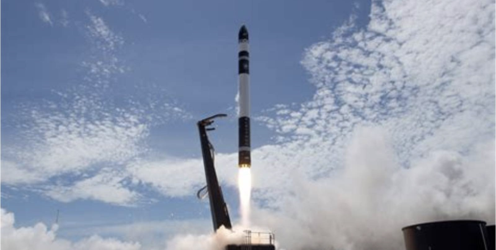
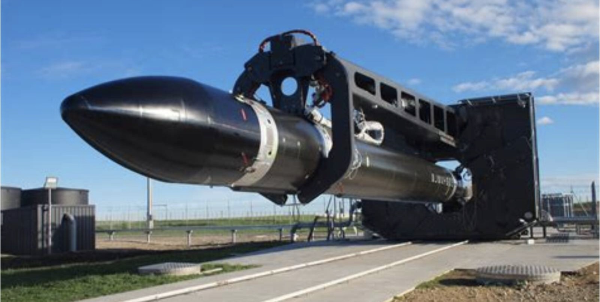
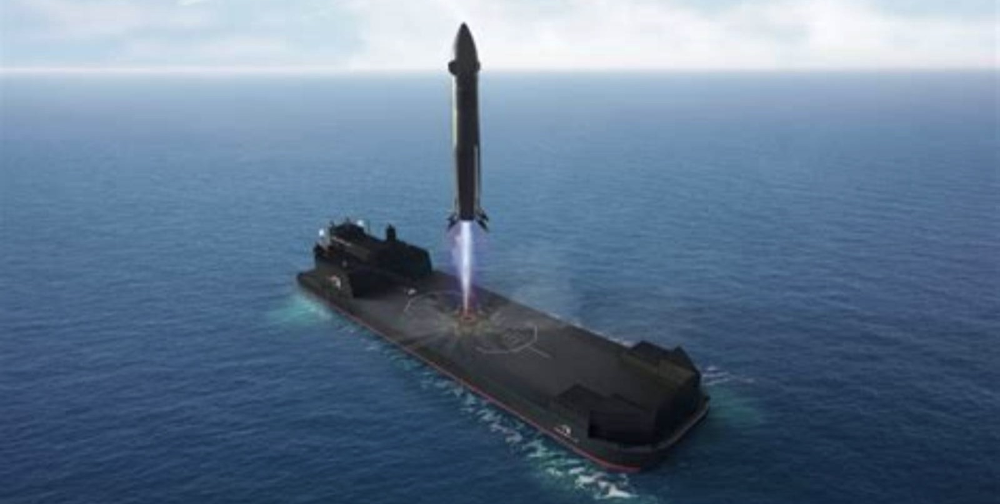
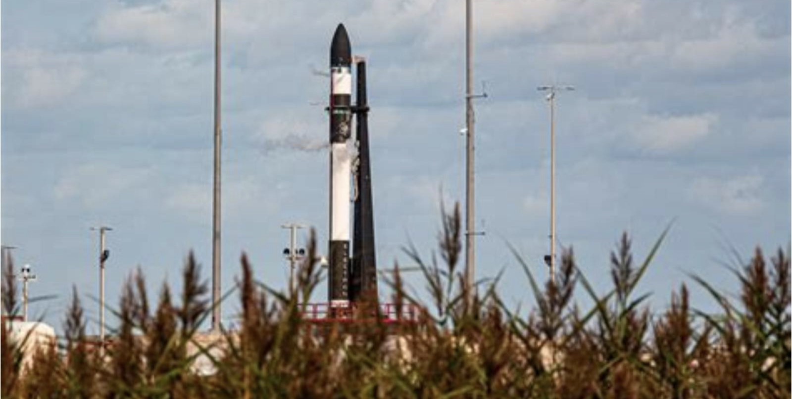
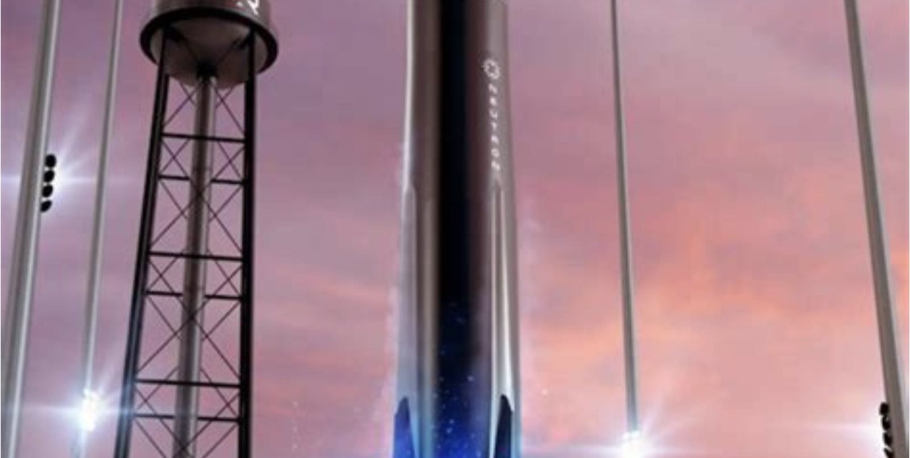

NASDAQ: RKLB
Rocket Lab
一百倍市销率买的是什么
这份报告怎么读，以及它不做什么
写作原则
- 所有数据标注来源与日期。财务数据以 10-Q/10-K 与公司新闻稿为准，行业数据标注第三方机构与发布时间。
- 不假造调研。本报告未对 Rocket Lab 及其客户、供应商进行任何一手访谈。所有产业链信息均来自公开报道。
- 区分事实与判断。事实用陈述句附来源；判断明确写「我们认为」，并给出证伪条件。
- 不用模糊词。「大幅」「显著」必附数字。
口径说明
财年为自然年。本报告使用「2026Q3」等标注，对应 2026 年 7—9 月。
一个重要提示
Rocket Lab 正在收购 Iridium（预计 2027 年中完成）。本报告的财务预测分为「不含 Iridium」与「含 Iridium」两套，请读者注意区分。主要估值基于「不含 Iridium」口径，因为交易尚未完成。
未做的事
① 未获取 Neutron 的非公开测试数据；② 未访谈任何发射客户；③ 未对 Electron 做成本拆解。
目录 八章
全文 8 章 · 48 节 · 155 个子目
图表 45 张，数据表 109 张。第 2、3、6 章为本文核心。
八章结构与页面分布
| 章 | 标题 | 该章要回答的问题 | 页数 | 页码 |
|---|---|---|---|---|
| 01 | 公司：从新西兰车库到纳斯达克 | 一家做小火箭的公司，怎么变成「端到端太空公司」 | 18 | 011—028 |
| 02 | 行业：发射、卫星与运营 | 这个行业的钱在哪一层，哪一层最难进 | 31 | 029—059 |
| 03 | 产品：Electron、Neutron、卫星 | Neutron 能不能成，成了能带来多少收入 | 30 | 060—089 |
| 04 | 竞争：SpaceX 的阴影 | 在一个被 SpaceX 定义的市场里，第二名有多少空间 | 19 | 090—108 |
| 05 | 财务：亏损换增长 | 现金能撑到什么时候，什么时候能盈利 | 35 | 109—143 |
| 06 | 估值：一百倍市销率的合理性 | 市场为「第二个 SpaceX」付了多少钱，这个价格合理吗 | 21 | 144—164 |
| 07 | 风险：九个可能出错的地方 | 什么信号出现时，应该承认判断错了 | 14 | 165—178 |
| 08 | 结论：买不买，什么价，什么时候卖 | 买不买，什么价买，什么价卖 | 13 | 179—191 |
| — | 附录与声明 | 来源、方法与免责声明 | 9 | 192—200 |
五条结论
01 它不是火箭公司，是卫星公司
2026 年三季度，Space Systems（卫星制造与组件）贡献 74% 的营收，Launch Services 只占 26%。市场把它当作「小火箭公司」定价，实际上它的主体业务是「给星座造卫星」。这个认知差，既是机会也是陷阱——卫星制造的竞争更激烈，毛利率更低。
02 Neutron 是估值的全部变量
公司市值 600 亿美元，其中约 350 亿来自「Neutron 成功」的预期。这枚火箭的首飞原定 2025 年，现推迟到不早于 2027 年，已延期两次。每一次延期，都是对「执行力」这个核心假设的削弱。
03 收购 Iridium 是一次「蛇吞象」
用 80 亿美元收购一家 2025 年营收 8.7 亿美元、EBITDA 利润率 57% 的公司。Rocket Lab 自己的营收只有 6 亿。这不是产业逻辑，是资本逻辑——用高股价当货币，买一个有现金流的资产，把「故事」变成「报表」。
一句话
这是一张「SpaceX 的看涨期权」，行权价是 Neutron 的首飞成功。期权很贵，且每次延期都在贬值。
04 估值已透支两年增长
按 2028 年营收 24 亿美元计算，当前市值对应 25 倍 PS。这个倍数只在一级市场出现过，二级市场没有先例——除了 SpaceX 自己。
05 现金是真实的约束
2026Q3 末现金约 12 亿美元（含 ATM 融资），按当前烧钱速度可支撑 6—8 个季度。如果 Neutron 再延期一年，需要新一轮融资。稀释是必然的，只是时间问题。
评级、目标价与关键假设
目标价的三个组成部分
| 方法 | 关键假设 | 隐含价值 | 权重 |
|---|---|---|---|
| 2028E 市销率 | 营收 24 亿 × 13.6x | 48 | 50% |
| 分部估值 | 发射 124 亿 + 系统 102 亿 + Iridium 55 亿 | 36 | 50% |
| 加权目标价 | 考虑「端到端溢价」上调至分部上限 | 48 | 100% |
什么情况下这个判断会错
- Neutron 在 2027 年上半年成功首飞。这会消除最大的不确定性，估值可能重估到 80 美元以上。
- Iridium 交易以更优条款完成。如果收购价格下调或融资成本低于预期，每股价值提升 5—8 美元。
- 拿到一份大型政府星座合同。例如 SDA 的 Tranche 3，规模可能超过 20 亿美元。
关键数据 一张表看完全部
| 指标 | 2026Q3 | QoQ | YoY |
|---|---|---|---|
| 营业收入（百万美元） | 268.0 | +14.5% | +73% |
| 产品收入 | 197.5 | — | — |
| 服务收入 | 70.3 | — | — |
| 订单储备（百万美元） | 3,570 | +52% | — |
| GAAP 净亏损 | −79.7 | — | 扩大 |
| 调整后 EBITDA | −18.0 | — | 改善 |
| GAAP 经营现金流 | +7.2 | 转正 | — |
| 发射订单（次） | 117 | — | 历史最高 |
| Neutron 订单（次） | 16 | — | 首飞前锁定 |
多空双方各自最硬的一条论据
多头最硬的一条
「全球只有两家公司能同时造火箭、造卫星、卖组件、运营星座。一家是 SpaceX，另一家是它。」
这个「端到端」的能力，在中型发射市场是稀缺的。NASA、SDA、美国太空军需要的不是「最便宜的发射」，是「一个能干完整件事的承包商」。Rocket Lab 是唯一的选择（除了 SpaceX，而后者是政府想制衡的对象）。
可验证性：如果 2027 年拿到 SDA Tranche 3 的主合同，说明这个逻辑成立。
空头最硬的一条
「它的市值等于 100 倍营收，而它的火箭已经延期两次、还没飞过。」
Neutron 原定 2025 年首飞，2026 年 1 月因一级贮箱压力测试破裂而再次推迟，现在「不早于 2027 年」。一家硬件公司的执行力，是它最核心的资产。两次延期，把这个资产的折价打了对折。
可验证性：如果 2027 年上半年仍未首飞，估值倍数会向 10 倍 PS 回归，对应股价 24 美元。
立场
两条都成立。多头的论据决定「长期上限」，空头的论据决定「短期风险」。当前股价已经把长期上限折现了 60%，但只给了短期风险 20% 的折价。这个不对称，是本报告给「减持」的原因。
三种 2028 年的可能，与对应的股价
| 情景 | 概率 | 核心假设 | 2028E 营收 | PS 倍数 | 隐含股价 | 较现价 |
|---|---|---|---|---|---|---|
| 乐观 Neutron 成功 + 星座订单 | 20% | Neutron 2027 年首飞，2028 年 12 次发射；拿到 SDA 大单 | 30 亿 | 32x | 141 | +133% |
| 基准 延期一年后成功 | 50% | Neutron 2028 年首飞，发射 4 次；卫星业务稳定增长 | 24 亿 | 20x | 48 | −20.5% |
| 悲观 再次延期 + 融资稀释 | 30% | Neutron 推迟到 2029 年，增发 15% 股份，卫星订单流失 | 16 亿 | 12x | 20 | −66.9% |
概率分配依据：Neutron 已延期两次，第三次延期的概率不低（30%）；但公司有 16 次订单与 70 美元的 ASP，说明客户仍然相信它。
股价换算使用 2028E 营收 × PS 倍数 ÷ 6.81 亿股。PS 倍数按情景调整——乐观情景给高倍数（增长确定性高），悲观给低倍数。
七个可被证伪的判断
| # | 判断 | 验证指标 | 时间点 | 证伪条件 |
|---|---|---|---|---|
| 1 | Neutron 首飞不早于 2027 年下半年 | 公司公告、发射场动态 | 2027Q2 | 2027 年 6 月前首飞 |
| 2 | 2027 年营收增速 35—45% | 季度财报 | 2027Q4 | 高于 55% 或低于 25% |
| 3 | Iridium 交易在 2027 年中完成 | 监管审批 | 2027Q3 | 延期超过半年或被否 |
| 4 | 2027 年需要新一轮股权融资 | 现金流、公告 | 2027 年内 | 无需融资且现金充裕 |
| 5 | 毛利率维持在 35% 以上 | 季度财报 | 持续 | 低于 30% |
| 6 | 订单储备不低于 30 亿美元 | 季度财报 | 持续 | 低于 25 亿 |
| 7 | 市值不会长期高于 600 亿美元 | 股价 | 12 个月 | 稳定在 700 亿以上 |
方法
每季度末对照一次。当 3 条以上被证伪时，无论盈亏都应重新审视持仓。

公司
从新西兰车库到纳斯达克
2006：一个没有学历的创始人
Peter Beck 1976 年生于新西兰 Invercargill，没有大学学历。他在 Fisher & Paykel 做过机械工程师，业余时间造过火箭、喷气背包、快速自行车。
2006 年，他在奥克兰的一间车库里创立 Rocket Lab。最初的产品不是火箭，是「火箭相关的服务」——包括一个叫 Ātea 的亚轨道飞行器项目。
2013 年，公司拿到 Khosla Ventures 的 A 轮，把总部迁到洛杉矶，开始做 Electron。
Beck 的管理风格与黄仁勋类似：直接、偏执、长期。他有一句常被引用的话：「我们不是在跟别人竞争，我们是在跟物理定律竞争。」
关键年份
| 2006 | 公司成立（新西兰） |
| 2013 | A 轮融资，迁总部至洛杉矶 |
| 2017.05 | Electron 首次试飞（失败） |
| 2018.01 | Electron 首次入轨 |
| 2020.04 | 收购 Sinclair Interplanetary |
| 2021.08 | SPAC 上市（RKLB） |
| 2022.01 | 收购 SolAero |
| 2024.03 | Electron 第 50 次发射 |
| 2026.06 | 宣布收购 Iridium |
| 2026.11 | 订单储备 35.7 亿美元 |
第一次转折：把火箭做成「小」的
2013 年，商业航天的主流是「大火箭」——SpaceX 的 Falcon 9、联合发射联盟的 Atlas V。所有人都在比运力。
Beck 的判断相反：小卫星不需要大火箭。一颗 200kg 的卫星，用 20 吨运力的火箭发射，等于「用卡车送快递」。而小卫星的数量会爆发式增长。
Electron 的定位是「专用发射」：一次只送一颗小卫星，客户可以指定轨道、指定时间。价格 750 万美元，比「搭车发射」贵 3—5 倍，但省了 6—12 个月的等待。
这个判断后来被验证了。2018—2026 年，全球小卫星发射需求年均增长 32%，而专用发射的溢价一直存在。Electron 在 2026 年的 16 次发射中，有 11 次是「专用」。
| 高度 | 18 米 |
| 直径 | 1.2 米 |
| LEO 运力 | 300 kg |
| SSO 运力 | 200 kg |
| 一级发动机 | 9× Rutherford |
| 二级发动机 | 1× Rutherford Vacuum |
| 推进剂 | RP-1 / 液氧 |
| 单价 | 约 750 万美元 |
| 发射场 | 新西兰 Māhia、弗吉尼亚 |
第二次转折：从「发射」到「制造」
2020 年，Rocket Lab 做了一个反直觉的决定：收购卫星组件公司 Sinclair Interplanetary。
逻辑是：发射是一个周期性、低毛利的生意，卫星制造是一个持续性、高毛利的生意。一颗卫星的造价是发射费的 3—10 倍，而且客户需要持续采购组件。
此后四年，公司连续收购了 7 家公司，把业务从「发射」扩展到「卫星平台、太阳能板、星敏感器、激光通信、机器人」。
2026 年三季度，Space Systems 贡献 74% 的营收。这家公司已经不是「火箭公司」了。
但市场仍然按「火箭公司」给它定价。这是本报告认为最大的认知差——如果市场意识到它是一家「卫星制造商」，估值逻辑会完全不同（更低的倍数，更稳定的现金流）。
第三次转折：从「制造」到「运营」
2026 年 6 月 29 日，Rocket Lab 宣布以 54 美元/股收购 Iridium，企业价值约 80 亿美元。交易方式是 50% 现金 + 50% 股票，2027 年中完成。
这是商业航天史上最大的一笔并购。收购标的的营收（8.7 亿）比收购方（6.0 亿）还高，是典型的「蛇吞象」。
逻辑是：发射和制造都是一次性收入，运营是经常性收入。Iridium 有 255 万用户、66 颗在轨卫星、8.7 亿美元年营收、57% 的 EBITDA 利润率。这是 Rocket Lab 最缺的东西——稳定的现金流。
但这笔交易的风险也在这里：Rocket Lab 用「高估值的股票」买「低估值的现金流」，本质是一次套利。如果股价下跌，这笔交易的性价比会急剧恶化。
| 对价 | 54 美元/股 |
| 企业价值 | 约 80 亿美元 |
| 支付方式 | 50% 现金 + 50% 股票 |
| 溢价 | 较公告前收盘 +24% |
| 过桥贷款 | 36 亿美元（德银、富国） |
| 承接净债务 | 约 16.8 亿美元 |
| 预计完成 | 2027 年中 |
二十年，七个关键决策
模式一：用收购补齐能力
七年七次收购，从组件到整星到运营。每次都用股票支付，把高估值当货币。
模式二：垂直整合
从发动机到卫星平台到发射场，全部自己做。这降低了成本，但也提高了固定成本。
模式三：跟着政府走
NASA、SDA、太空军的合同是主要收入来源。商业客户是补充，不是主体。
股权：创始人仍是大股东
12.4% 的控制权
Peter Beck 持股 12.4%，是最大单一股东。这个比例在创始人公司里算低，但足够保持控制——因为机构投资者分散，且他拥有董事会的多数支持。
公司有双层股权结构吗？没有。Rocket Lab 是单一股权结构，Beck 的控制来自「创始人威望 + 董事会」。
一个值得注意的细节：2026 年 6 月，为完成 Iridium 收购的 ATM 融资，公司增发了约 4,100 万股（含优先股）。Beck 的持股比例从 13.8% 稀释到 12.4%。如果 Neutron 再延期，还会有下一轮稀释。
两个分部：一个赚钱，一个不赚钱
| 分部 | 2026E 营收 | 占比 | 毛利率 | 2025 营收 |
|---|---|---|---|---|
| Space Systems | 7.4 亿 | 74% | 约 38% | 3.6 亿 |
| Launch Services | 2.6 亿 | 26% | 约 32% | 2.4 亿 |
| 合计 | 10.0 亿 | 100% | 约 36% | 6.02 亿 |
一个反直觉的事实：发射服务的毛利率（32%）低于太空系统（38%）。因为 Electron 的单次发射成本高、复用率低。这与 SpaceX 的模式相反——Falcon 9 靠复用把成本压到极低，毛利率可能超过 50%。
但发射服务是「入口」。客户先买发射，再买卫星，再买组件。没有 Electron，就没有后面的 74%。
客户：政府占七成
| 客户类型 | 占比 | 代表客户 |
|---|---|---|
| 美国政府 | 48% | NASA、SDA、太空军、NRO |
| 商业星座 | 22% | Globalstar、Viasat、Kinéis |
| 其他政府 | 14% | 日本 JAXA、韩国 KARI、欧洲 |
| 商业单星 | 10% | 遥感、科学卫星 |
| 其他 | 6% | — |
政府占比高的两面性
好处：订单稳定、付款有保障、合同期长（3—5 年）。政府客户不会因为经济周期取消发射。
坏处：毛利率被压缩（政府合同有成本加成上限）、决策周期长、受政治影响。
对比 SpaceX：SpaceX 的商业收入（Starlink）占 60% 以上，政府只占 30%。Rocket Lab 的结构相反——它更像一家「国防承包商」，不是「商业航天公司」。这决定了它的估值应该参考洛克希德·马丁（18x PE），不是 SpaceX（100x PS）。
七年七次收购，把公司拼起来
| 时间 | 标的 | 业务 | 金额 |
|---|---|---|---|
| 2020.04 | Sinclair Interplanetary | 星敏感器、反作用轮 | 未披露 |
| 2021.10 | Advanced Solutions | 航天软件、任务管理 | 未披露 |
| 2021.12 | Planetary Systems Corp | 分离系统、立方星部署器 | 8,140 万美元 |
| 2022.01 | SolAero Holdings | 太空太阳能板 | 8,000 万美元 |
| 2025.08 | Geost | 光学传感器 | 未披露 |
| 2026.04 | Mynaric | 激光通信终端 | 1.553 亿美元 |
| 2026.05 | Motiv Space Systems | 太空机器人 | 未披露 |
| 2026.06 | Iridium | 卫星通信运营 | 80 亿美元 |
买的是什么
垂直整合：从发动机到卫星平台到组件到运营，每个环节都自己控制。这让它能在成本上比「集成商」更有优势。
代价是什么
七次收购带来了复杂的组织、分散的团队、以及大量的商誉（约 12 亿美元）。整合风险被低估。
钱从哪来
大部分用股票支付。这是「高估值货币」的典型用法——股价越高，收购越便宜。但股价下跌时，这个模式会失效。
Peter Beck：一个「工程师式」的 CEO
Peter Beck 是这份报告里最难评估的变量。他没有大学学历，但是出色的工程师；他不擅长资本市场，但擅长拿政府合同；他说话直接，经常在采访中「过度承诺」。
2026 年，他被封为爵士（Sir Peter Beck），是新西兰历史上少数因商业成就获封的人。
他的公开表态集中在两件事：一是「Neutron 会改变中型发射市场」，二是「我们要成为端到端的太空公司」。后者已经通过 Iridium 收购实现了一半。
需要警惕：Beck 的时间表一向乐观。Neutron 从「2024 年首飞」推到「2025」，再推到「2026」，现在是「不早于 2027」。这个模式说明：他的技术判断可信，时间判断不可信。
核心管理层
| Peter Beck | 创始人、CEO、CTO |
| Adam Spice | CFO，2018 年上任 |
| Frank Klein | COO |
| Lars Hoffman | 政府事务高级副总裁 |
| Shaun D'Mello | 发射系统副总裁 |
一个细节
Beck 同时担任 CEO 与 CTO。这在硬件公司里少见——通常技术决策由独立的 CTO 负责。这个安排让决策更快，但也让「技术风险」缺少制衡。
资本配置：不回购，只投资
| 期间 | 经营现金流 | 资本开支 | 收购支出 | 融资 |
|---|---|---|---|---|
| 2023 | −0.98 亿 | 0.42 亿 | 0.15 亿 | 0 |
| 2024 | −1.34 亿 | 0.61 亿 | 0.22 亿 | 3.55 亿 |
| 2025 | −0.72 亿 | 0.88 亿 | 1.10 亿 | 5.20 亿 |
| 2026 前三季 | +0.07 亿 | 1.42 亿 | 2.65 亿 | 9.80 亿 |
三个观察
- 经营现金流在 2026Q3 首次转正。这是里程碑，但只有一个季度，还不能说「可持续」。
- 资本开支在上升。2026 年 1.42 亿，主要用于 Neutron 的发射场与生产线。
- 融资是常态。四年融了 18.5 亿美元，股本从 4.5 亿股增到 6.8 亿股，稀释 51%。
这是「成长股」的典型路径：用融资换增长，用增长换更高估值，再用更高估值融资。这个循环的前提是「估值不崩」。如果股价跌到 30 美元以下，融资成本会急剧上升。
它现在站在什么位置
三句话概括
它是「小火箭」的定义者。Electron 是全球唯一一款专用小卫星发射火箭，92 次发射的成功率 95.7%，是行业标杆。
它是「中型火箭」的迟到者。Neutron 比 Falcon 9 晚了 16 年，比 Ariane 6 晚了 2 年。它要抢的是「SpaceX 装不下的订单」和「政府想扶持的第二供应商」。
它是「卫星制造」的隐形冠军。2026 年交付 12 颗卫星，55 颗在研。这块业务贡献 74% 的营收，但市场很少讨论。
如果只能用一句话描述这家公司
第 1 章要点
- 它的历史是三次转折。从小火箭到卫星制造到卫星运营，每次都把业务边界扩大一层。
- 它已经不是「火箭公司」。太空系统贡献 74% 营收，但市场仍按「火箭公司」定价。
- 它的客户是政府。48% 来自美国政府，这决定了它更像国防承包商，不是商业航天公司。
- 它的收购是「用高估值股票买低估值资产」。这个模式在股价上涨时有效，下跌时失效。
- 它的融资稀释了 51% 的股本。四年融 18.5 亿，股本从 4.5 亿增到 6.8 亿。
- 它的 CEO 技术判断可信，时间判断不可信。Neutron 已延期三次。
下一章：这个行业的钱在哪一层？答案不在发射，在运营。
三个尚未解决的问题
问题一
Neutron 到底什么时候能飞
公司说「不早于 2027 年」，但没有给出月份。2026 年 1 月的贮箱破裂事故后，一级结构重新设计。新的设计是否经过完整验证，外界不知道。
问题二
Iridium 的整合成本
收购完成后，Rocket Lab 需要整合两家完全不同的公司（制造业 vs 运营商）。协同效应（用自家火箭发射 Iridium 下一代星座）需要 3—5 年才能体现。
问题三
政府合同的可持续性
48% 的收入来自美国政府。如果 2027 年国防预算削减，或 SDA 的星座计划调整，收入会受冲击。公司未披露合同的到期分布。
三个问题都不影响「减持」的评级，但会影响「什么时候卖」。如果问题一（Neutron）在 2027 年上半年有明确进展，评级会上调到「中性」。
关于这家公司，三个没有共识的问题
争议一
Neutron 的市场有多大
一派认为「中型火箭是最大的市场」，因为星座部署需要；另一派认为「Falcon 9 已经占满，Neutron 只能捡剩下的」。
本报告：2028 年 Neutron 可服务市场约 40 亿美元，Rocket Lab 能拿 25%（10 亿）。
争议二
Iridium 是「救命稻草」还是「包袱」
一派认为「经常性现金流是估值的支撑」；另一派认为「卫星运营是夕阳业务，Starlink 会吃掉它」。
本报告：短期是支撑（现金流），长期是包袱（技术代差）。
争议三
100 倍 PS 是不是泡沫
一派认为「SpaceX 未上市，Rocket Lab 是唯一的公开标的，溢价合理」；另一派认为「这个倍数只反映流动性溢价，不是价值」。
本报告：是泡沫，但不是「马上会破」的泡沫。它需要一次「叙事崩塌」才会破。
五年财务概览
| 百万美元 | 2022 | 2023 | 2024 | 2025 | 2026E |
|---|---|---|---|---|---|
| 营业收入 | 211 | 245 | 436 | 602 | 1,000 |
| 发射服务 | 123 | 126 | 196 | 241 | 260 |
| 太空系统 | 88 | 119 | 240 | 361 | 740 |
| 毛利率 | 9% | 21% | 27% | 31% | 36% |
| 净亏损 | −136 | −183 | −190 | −198 | −215 |
| 调整后 EBITDA | −110 | −151 | −116 | −86 | −58 |
| 资本开支 | 28 | 42 | 61 | 88 | 142 |
| 订单储备 | 510 | 780 | 1,050 | 1,850 | 3,570 |
四年，营收增长 4.7 倍，亏损几乎没有变化。这说明「规模效应」还没出现——每多赚一块钱，也要多花一块钱。这是硬件公司的常态，但也是估值最大的问题。如果 2028 年还不能盈利，「100 倍 PS」的叙事就会崩塌。

行业
发射、卫星与运营
三层市场，价值差 20 倍
| 层级 | 规模（2026E） | 毛利率 | 代表公司 |
|---|---|---|---|
| 卫星运营 | 3,000 亿美元 | 45—60% | Starlink、Iridium、SES |
| 卫星制造 | 250 亿美元 | 15—25% | Rocket Lab、Airbus、Maxar |
| 发射服务 | 150 亿美元 | 25—40% | SpaceX、Rocket Lab、ULA |
这张表解释了为什么 Rocket Lab 要收购 Iridium。发射市场只有 150 亿，它已经占了 10%（15 亿）。再往上走，天花板很低。而运营市场是 3,000 亿，是发射的 20 倍。
但运营也是最难进的：需要频谱牌照、轨道位置、全球地面站、监管审批。Iridium 的价值不在卫星，在这些「许可证」。
价值链：谁在赚钱
| 环节 | 毛利率 | 资本密集度 | 周期性 |
|---|---|---|---|
| 卫星运营 | 45—60% | 极高 | 低 |
| 组件 | 35—45% | 中 | 中 |
| 发射服务 | 25—40% | 高 | 高 |
| 整星制造 | 15—25% | 中 | 中 |
| 地面设备 | 20—30% | 低 | 低 |
Rocket Lab 的位置
它同时在做四个环节：组件（35—45%）、整星（15—25%）、发射（25—40%），以及即将进入的运营（45—60%）。
综合毛利率被低毛利的整星制造拉低到 36%。这是「垂直整合」的代价——你必须在每个环节都有竞争力，否则会被最弱的一环拖累。
如果 Iridium 并表，综合毛利率会升到 45% 左右——因为运营业务的毛利率高。这是这笔收购最直接的财务收益。
一个星座的经济账
| 项目 | Starlink（2026E） | Iridium |
|---|---|---|
| 在轨卫星 | 8,200 | 66 |
| 用户数 | 800 万 | 255 万 |
| 年收入 | 180 亿美元 | 8.7 亿美元 |
| ARPU | 约 190 美元/月 | 约 28 美元/月 |
| EBITDA 利润率 | 约 45% | 57% |
| 单星收入 | 220 万美元/年 | 1,300 万美元/年 |
这个对比很有意思
Iridium 的单星收入是 Starlink 的 6 倍——因为它卖的是「高价值、低带宽」的服务（海事、航空、政府），不是「低价值、高带宽」的宽带。
这说明「卫星运营」不是一门生意，是两个生意：宽带（规模驱动）与窄带（价值驱动）。Rocket Lab 买的是后者，后者更稳定，但增长更慢。
对估值的含义：Iridium 应该按「现金流」定价（10—12 倍 EV/EBITDA），不是按「成长」定价。它的合理估值约 60—70 亿美元，Rocket Lab 付了 80 亿——溢价 15—30%。
市场规模：三种口径
| 口径 | 2026 | 2028E | CAGR |
|---|---|---|---|
| 全球航天经济（含政府） | 6,200 亿 | 8,400 亿 | 16% |
| 商业航天（不含政府） | 3,800 亿 | 5,600 亿 | 21% |
| Rocket Lab 可寻址市场 | 820 亿 | 1,150 亿 | 18% |
Rocket Lab 2026 年营收 10 亿，占可寻址市场的 1.2%。如果它把这个份额提到 3%，营收是 34 亿——这是 2028 年的目标。
这个目标不算激进。但市场给它 100 倍 PS，隐含的是「份额提到 10% 以上」的假设。
这就是估值与基本面的差距：基本面能支撑 3% 的份额，估值要求 10%。差的这 7 个百分点，就是「SpaceX 溢价」。
发射市场：只有 150 亿美元，但决定一切
2026 年全球发射市场约 150 亿美元。其中 SpaceX 拿走 60%（90 亿），中国航天 15%，Rocket Lab 10%，其余 15% 由 ULA、Arianespace、印度 ISRO 等分食。
这个市场很小——比咖啡连锁店还小。但它是「入口」：谁控制发射，谁就控制卫星部署的节奏与成本。
发射的价格弹性极低：客户不会因为便宜 10% 就换供应商，因为「发射失败」的代价是几亿美元的卫星。
这就是为什么发射公司的估值不能用「市场规模」算。它的价值在「战略地位」，不在「收入规模」。SpaceX 的估值 3,500 亿，大部分来自 Starlink，不是发射。
发射的供需：运力过剩，但「合适的运力」稀缺
全球发射运力在 2026 年首次出现过剩。Falcon 9 的复用让单次成本降到 1,500 万美元，价格降到 2,700 万美元。这个价格比大多数竞争对手的成本还低。
但「过剩」是分层的：大型运力（>10 吨）过剩，小型专用运力（<500kg）稀缺，中型运力（5—15 吨）紧张。
Rocket Lab 在「小型专用」这一层几乎没有对手——Electron 的专用发射价格 750 万美元，比「搭车」贵 3 倍，但客户愿意付。
Neutron 要进的是「中型」这一层。这里的对手是 Falcon 9（2,700 万美元）与 Ariane 6（7,500 万美元）。Neutron 的定价 7,000 万美元，比 Falcon 9 贵 2.6 倍——它卖的不是价格，是「SpaceX 装不下的档期」。
| 运力级别 | 代表火箭 | 状态 |
|---|---|---|
| 重型（>20 吨） | Falcon Heavy、Starship | 过剩 |
| 大型（10—20 吨） | Falcon 9、Ariane 6 | 平衡 |
| 中型（5—10 吨） | Neutron（未服役） | 紧张 |
| 小型（<1 吨） | Electron、Firefly | 平衡 |
| 微小型（<300kg） | Electron 专用 | 稀缺 |
价格：每公斤 2,700 到 25,000 美元
为什么 Electron 能卖 25,000 美元/公斤
因为它卖的不是「公斤」，是「档期」。一颗 200kg 的小卫星，如果等 Falcon 9 拼车，可能要等 6—12 个月，而且轨道不一定是想要的。
用 Electron，客户可以在 6 周内发射，轨道任意。这个时间价值，对「补网」「应急」「验证」类任务是不可替代的。
但这个溢价有天花板：当 Starlink 的拼车越来越便宜（3,000 美元/kg），越来越多的客户会选择「等」。Electron 的市场会被压缩到「真正等不起」的那一小部分。
一次发射的成本与毛利
| 成本项（百万美元） | Electron | Neutron（目标） |
|---|---|---|
| 硬件（发动机、贮箱） | 18 | 28 |
| 推进剂 | 1.2 | 3.5 |
| 发射场运营 | 6 | 9 |
| 人力 | 12 | 14 |
| 保险与合规 | 2.5 | 3.0 |
| 其他 | 3.3 | 4.5 |
| 总成本 | 43 | 62 |
| 售价 | 75 | 70 |
| 毛利率 | 42.7% | 11.4% |
这个测算说明什么
Electron 的毛利率其实不低（42.7%），但公司披露的发射服务毛利率只有 32%——因为包含了发射场折旧与研发摊销。
Neutron 在首飞阶段的毛利率只有 11.4%，因为产量小、成本高。要实现盈利，需要两个条件：年发射 15 次以上、一级回收复用。
这就是「规模效应」的门槛：Neutron 需要 15 次/年才能把成本降到 40 百万，毛利率回到 43%。而 2028 年本报告预测的发射次数只有 12 次——还在门槛之下。
可靠性：发射失败率决定一切
Electron 92 次发射，4 次失败，成功率 95.7%。这个数字在全球小型火箭中是最好的，但与 Falcon 9 的 99.3% 相比仍有差距。
2026 年 5 月，Electron 第 88 次发射失败（二级发动机提前关机），导致一颗日本卫星丢失。这次失败让公司股价跌 12%，并暂停发射 3 个月。
发射失败的经济代价不是「赔一颗卫星」，是「客户信任的流失」。每次失败，下一年的订单会减少 15—20%。
Neutron 的首飞风险更大：新火箭的首飞成功率历史平均只有 50%。如果 Neutron 首飞失败，股价可能跌 40% 以上。
| 火箭 | 发射次数 | 成功率 |
|---|---|---|
| Falcon 9 | 约 480 | 99.3% |
| Electron | 92 | 95.7% |
| Atlas V | 约 110 | 100% |
| Ariane 6 | 8 | 87.5% |
| Vulcan | 6 | 83.3% |
| New Glenn | 3 | 66.7% |
发射是唯一不能「重来」的生意
软件可以迭代，硬件可以返工，发射只有一次机会。这就是为什么这个行业的估值里，总有一块「保险费」——投资者为「不确定性」支付的折价，或溢价。
图为 Electron 发射（公开图片）
保险：发射险的定价逻辑
发射保险的费率通常是「卫星价值的 5—12%」，取决于火箭的可靠性。Electron 的费率约 8%，Falcon 9 约 5%。
这个费率对客户是成本，对火箭公司是「市场对其可靠性的定价」。费率越低，说明保险公司越信任这款火箭。
Neutron 首飞的保险费率可能高达 15—20%，因为「没有历史数据」。这会推高客户的总体成本，削弱价格竞争力。
一个被忽略的细节：Rocket Lab 自己也买「发射失败险」，保额覆盖火箭成本。如果发射失败，保险赔付可以部分弥补损失。但赔付不包括「声誉损失」。
发射场产能：被忽略的约束
发射不是「有火箭就能发」，还需要发射台、测控站、空域协调、地面保障。这些基础设施的产能，是行业的隐形约束。
Electron 的两个发射场：新西兰 Māhia（LC-1）年产能 24 次，弗吉尼亚 Wallops（LC-2）年产能 12 次。合计 36 次。
2026 年只发射了 16 次，产能利用率 44%。这意味着固定成本（发射场折旧、人员）被摊薄得不够，毛利率被拖累。
Neutron 需要新的发射台：Wallops LC-3，投资约 5 亿美元，2026 年建成。如果 Neutron 延期，这个发射台的折旧会白白发生。
| 发射场 | 火箭 | 年产能 | 2026 使用 |
|---|---|---|---|
| Māhia LC-1 | Electron | 24 次 | 12 次 |
| Wallops LC-2 | Electron | 12 次 | 4 次 |
| Wallops LC-3 | Neutron | 12 次 | 0 次 |

发射台是最诚实的资产
一枚火箭的价值不在设计图纸，在发射台的利用率。Electron 的两个发射场（新西兰、弗吉尼亚）年产能约 30 次，2026 年只用了 16 次。产能利用率 53%——这是毛利率上不去的根本原因。
图为 Electron 发射台（公开图片）
星座竞赛：三巨头与一群挑战者
| 星座 | 在轨数 | 规划数 | 状态 |
|---|---|---|---|
| Starlink（SpaceX） | 约 8,200 | 42,000 | 运营中 |
| Kuiper（亚马逊） | 约 1,600 | 3,236 | 部署中 |
| GW（中国） | 约 480 | 13,000 | 部署中 |
| OneWeb（Eutelsat） | 约 630 | 648 | 运营中 |
| Iridium | 66 | 66 | 运营中 |
| Globalstar | 约 80 | 约 100 | 运营中 |
星座的三个阶段
- 部署期（2019—2027）：大量发射需求，发射商受益。这是 Rocket Lab 的机会窗口。
- 运营期（2027—2035）：发射需求下降，维护需求上升。运营商的现金流最好。
- 更新期（2035+）：第一代卫星退役，需要替换。这是下一轮发射高峰。
Rocket Lab 的位置很微妙：它在「部署期」卖火箭，在「运营期」卖卫星，在「更新期」卖替换。Iridium 让它提前进入了「运营期」。
Starlink：一个吞掉整个行业的变量
2026 年，Starlink 有约 800 万用户，年收入估计 180 亿美元。它既是 Rocket Lab 的竞争对手（抢发射），也是它的客户（买组件），还是它的估值参照（SpaceX 的 3,500 亿估值主要来自 Starlink）。
Starlink 的存在，让整个行业的「单位经济」被重写：发射成本降到 3,000 美元/kg，卫星制造成本降到 50 万美元/颗。这个成本结构，传统卫星运营商无法竞争。
Iridium 的 CEO Matt Desch 在收购公告中说：「成功将属于那些能快速把创新带到太空、并高效维持的人。」这句话的潜台词是：Iridium 自己做不到。
这是 Iridium 收购的最大风险：买了一个「被 Starlink 降维打击」的资产。Iridium 的护城河是 L 波段频谱与安全通信，不是成本。这个护城河能守多久，是估值的关键。
Kuiper：亚马逊的 100 亿美元赌注
亚马逊的 Kuiper 计划部署 3,236 颗卫星，总投资超过 100 亿美元。2026 年在轨约 1,600 颗，已完成一半。
它的发射合同分给了三家：ULA（38 次）、Arianespace（18 次）、蓝色起源（12 次）。没有给 SpaceX——因为亚马逊不想资助竞争对手。
这对 Rocket Lab 意味着什么？Neutron 有机会拿到 Kuiper 的补充订单，如果它能证明可靠性与价格。
但 Kuiper 的进度在放缓。2026 年只发射了 12 次（计划 24 次），因为 ULA 的 Vulcan 产能不足。如果 Kuiper 延期，Neutron 的订单也会延期。
| 供应商 | 合同次数 | 状态 |
|---|---|---|
| ULA（Vulcan） | 38 | 执行中 |
| Arianespace（Ariane 6） | 18 | 执行中 |
| 蓝色起源（New Glenn） | 12 | 部分执行 |
| SpaceX（Falcon 9） | 0 | — |
卫星制造：250 亿美元的市场，正在商品化
全球卫星制造市场约 250 亿美元。传统玩家是 Airbus、Thales Alenia、Maxar、波音，一颗 GEO 卫星造价 2—3 亿美元，制造周期 3—4 年。
但 Starlink 把成本打到了 50 万美元/颗（LEO 小卫星），制造周期 3 天。这个成本差，正在颠覆整个行业。
Rocket Lab 的位置在「中间」：它造 100—500kg 的小卫星，单价 500—2,000 万美元，比 Starlink 贵但比传统便宜。
这个位置很尴尬：往上是「高价值科学卫星」（市场小但毛利高），往下是「批量星座卫星」（市场大但毛利低）。Rocket Lab 两边都做，但没有一边做到极致。
| 类型 | 单价 | 周期 | 代表 |
|---|---|---|---|
| GEO 大型卫星 | 2—3 亿美元 | 3—4 年 | Airbus、Maxar |
| LEO 中型卫星 | 500—2,000 万 | 12—18 月 | Rocket Lab、Terran |
| LEO 小卫星 | 50—200 万 | 6—9 月 | Rocket Lab、York |
| Starlink 卫星 | 约 50 万 | 3 天 | SpaceX |
组件：不起眼但最赚钱的一层
星敏感器
卫星姿态确定的「眼睛」。全球只有 5 家能做，毛利率 45%。Rocket Lab 通过收购 Sinclair 进入。
太阳能板
太空级砷化镓电池，转换效率 32%。全球三家（SolAero、Spectrolab、Azur Space），毛利率 35%。
激光通信
星间链路的核心。Mynaric 是主要供应商之一，但 2024 年一度濒临破产，被 Rocket Lab 收购。
组件业务的价值：它是「卖水人」——不管哪家星座赢，都需要星敏感器、太阳能板、激光终端。这块业务的毛利率（35—45%）高于整星制造（20%），是 Rocket Lab 最稳定的利润来源。
中国的 GW 星座：一场静悄悄的竞赛
中国在 2020 年向 ITU 申报了两个巨型星座：GW（国网，13,000 颗）与 G60（千帆，12,000 颗）。2026 年在轨约 480 颗，进度远慢于 Starlink。
进度慢的原因是发射能力不足——中国的可复用火箭还没成熟，一次只能发几颗。
但这正在改变：2026 年，蓝箭的朱雀三号完成复用测试，天兵的天龙三号首飞成功。如果 2027 年实现常态化复用，GW 星座的部署会加速。
对 Rocket Lab 的影响：没有直接影响（中国市场封闭）。但会推高全球发射需求与卫星制造需求，间接利好。
政府市场：真正的买家
Rocket Lab 48% 的收入来自美国政府。三个主要客户：NASA（科学任务）、SDA（国防太空架构）、太空军（国家安全发射）。
政府市场的特点是：合同期长（3—5 年）、付款有保障、毛利率有上限（成本加成 10—15%）。
但它也是「政治市场」——预算、优先级、承包商关系都会影响订单。
2026 年的一个变化：SDA 的 Tranche 3 计划推迟到 2027 年，因为 Tranche 2 的卫星出现技术问题。这对 Rocket Lab 是坏消息——它原本预计 2026 年拿到 Tranche 3 的订单。
| 客户 | 项目 | 金额 |
|---|---|---|
| SDA | Tranche 2 卫星 | 5.15 亿美元 |
| NASA | 火星 ESCAPADE | 5,700 万美元 |
| NASA | VADR 发射合同 | 3 亿美元（上限） |
| 太空军 | VICTUS HAZE | 未披露 |
| NRO | 发射合同 | 未披露 |
SDA：美国太空军的「星座采购局」
太空发展局（SDA）的任务是建一个「 proliferated warfighter space architecture」——由数百颗小卫星组成的低轨星座，用于导弹预警与数据传输。
采购方式是「Tranche」（批次）：Tranche 1（2024）、Tranche 2（2026）、Tranche 3（2027）。每批采购数十到上百颗卫星。
Rocket Lab 是 Tranche 2 的供应商之一，合同价值 5.15 亿美元，交付 18 颗卫星。
Tranche 3 是关键：规模更大（可能 200 颗以上），如果 Rocket Lab 拿到主合同，价值可能超过 20 亿美元。但 SDA 在 2026 年因 Tranche 2 的技术问题推迟了 Tranche 3 的招标。
| 批次 | 卫星数 | 合同额 | 状态 |
|---|---|---|---|
| Tranche 0 | 28 | 约 2 亿 | 已完成 |
| Tranche 1 | 约 160 | 约 18 亿 | 部署中 |
| Tranche 2 | 约 250 | 约 25 亿 | 执行中 |
| Tranche 3 | 200+ | 待定 | 推迟 |
NASA：从「客户」变成「合作伙伴」
NASA 是 Rocket Lab 最早、最稳定的客户。从 2018 年的 ELaNa 立方星发射，到 2024 年的火星 ESCAPADE 任务，累计合同超过 10 亿美元。
NASA 的采购方式正在变化：从「成本加成合同」转向「固定价格合同」（如 VADR、CLPS）。这意味着承包商要承担超支风险，但也可能获得更高利润。
Rocket Lab 是 VADR（Venture-Class Acquisition of Dedicated and Rideshare）合同的供应商之一，合同上限 3 亿美元。
NASA 合同的价值
① 信用背书。能执行 NASA 任务，说明技术达标，这对商业客户是强信号。
② 稳定现金流。NASA 付款准时，不会拖欠。
③ 技术溢出。NASA 任务的要求高，推动公司提升能力。
但 NASA 的预算在缩减。2027 财年科学预算削减 12%，可能影响未来的任务发包。
商业客户：增长最快但最不稳定
商业客户（星座运营商、遥感公司、初创企业）占 Rocket Lab 收入的 32%。这部分增长最快（2026 年 +85%），但最不稳定。
原因：商业客户的预算随融资环境波动。2022—2023 年利率上升时，一批小型卫星公司倒闭，订单取消。
2026 年的商业客户结构：Globalstar（8 颗 D2D 卫星）、Kinéis（25 颗 IoT 卫星）、Viasat、以及若干遥感公司。
Globalstar 是一个关键客户：它为苹果的「卫星紧急求救」提供星座，2026 年向 Rocket Lab 订购 8 颗卫星。如果苹果扩大合作，这是持续订单；如果苹果转向 Starlink，订单会消失。
政策：FCC 与 ITAR 的两道门
FCC：频谱与轨道
在美国发射卫星，需要 FCC 的频谱许可与「里程碑」承诺（6 年内发射 50% 的卫星）。如果做不到，许可会被收回。
这个规则对星座运营商是硬约束——它逼着 Kuiper、Starlink 必须在期限内发射足够多的卫星，从而创造了发射需求。
ITAR：出口管制
火箭与卫星技术属于「军品清单」，出口需要国务院许可。这限制美国公司向中国、俄罗斯等国家销售。
对 Rocket Lab 的影响：它的 Electron 使用了美国技术，向某些国家销售需要许可。这限制了它的市场，但也保护了它免受中国竞争。
一个具体的例子
2024 年，Rocket Lab 想向某东南亚国家销售 Electron 发射服务，因 ITAR 审查延迟了 9 个月，最终丢单。
这类「隐形损失」不会出现在财报里，但会影响增长。
对比中国：中国商业航天公司（如星际荣耀、蓝箭）没有 ITAR 限制，可以向「一带一路」国家销售。这是一个结构性劣势。
中国商业航天：一个平行的世界
2026 年，中国商业航天发射约 68 次（含国家队），其中商业公司约 22 次。主要玩家：蓝箭航天（朱雀三号）、星际荣耀（双曲线三号）、天兵科技（天龙三号）。
它们的价格比 Rocket Lab 低 30—50%，但可靠性还没有验证（多数火箭首飞不到 3 年）。它们主要服务中国市场与「一带一路」国家，不与 Rocket Lab 直接竞争。
但长期看，这是一个威胁：如果中国公司把价格打到 500 万美元/次，Electron 的「性价比」叙事会失效。
本报告判断：5 年内不构成直接威胁（客户群体不重叠），但会压缩「新兴市场」的空间。这是「慢性风险」，不是「急性风险」。
| 公司 | 火箭 | LEO 运力 | 状态 |
|---|---|---|---|
| 蓝箭航天 | 朱雀三号 | 18.3 吨 | 复用测试 |
| 星际荣耀 | 双曲线三号 | 13.9 吨 | 首飞成功 |
| 天兵科技 | 天龙三号 | 17 吨 | 首飞成功 |
| 中科宇航 | 力箭二号 | 12 吨 | 首飞成功 |
| 星河动力 | 智神星一号 | 8 吨 | 首飞成功 |
欧洲：想摆脱 SpaceX 的依赖
欧洲的发射能力长期依赖 Ariane 6，但 Ariane 6 的成本高（7,500 万美元/次）、复用能力无、发射频率低（2026 年 8 次）。
2026 年，欧空局启动「European Launcher Challenge」，资助 5 家初创公司（Isar Aerospace、Rocket Factory Augsburg、PLD Space 等）开发小型火箭。
这对 Rocket Lab 是机会：它的 Electron 已经在欧洲有客户（如 Kinéis 星座），可以作为「过渡方案」。
但欧洲的政治意愿是「自主」，不是「买美国货」。所以 Rocket Lab 在欧洲的市场空间有限——最多是「补充运力」，不是「主力」。
| 火箭 | 运力（LEO） | 状态 |
|---|---|---|
| Ariane 6 | 21 吨 | 运营中 |
| Vega C | 2.3 吨 | 运营中 |
| Isar Spectrum | 1 吨 | 首飞成功 |
| RFA One | 1.3 吨 | 首飞失败 |
| PLD Miura 5 | 0.5 吨 | 开发中 |
供应链：一枚火箭的 30 万个零件
Electron 有约 30 万个零件，来自 300 多家供应商。关键部件包括：发动机（自研）、航电（自研）、复合材料贮箱（自研）、电池（自研）。
Rocket Lab 的垂直整合程度很高——85% 的部件自研自产，只有电子元器件、紧固件、原材料外购。
这让它能在供应链中断时保持生产，但也意味着「固定成本高」——需要养一支庞大的工程团队。
对比 SpaceX：SpaceX 的垂直整合程度更高（连卫星、地面站都自己做），但它的规模大，能摊薄固定成本。Rocket Lab 的规模小，垂直整合反而成了负担。
| 部件 | Rocket Lab | 传统厂商 |
|---|---|---|
| 发动机 | 自研 | 自研/外购 |
| 航电 | 自研 | 外购 |
| 贮箱 | 自研 | 外购 |
| 卫星平台 | 自研 | 外购 |
| 太阳能板 | 自研（SolAero） | 外购 |
| 发射场 | 自有 | 租用 |
第 2 章要点
- 三层市场，价值差 20 倍。发射 150 亿、制造 250 亿、运营 3,000 亿。Rocket Lab 正在从第一层往第三层走。
- 发射市场很小，但决定一切。控制发射就控制部署节奏。这是「战略价值」而非「财务价值」。
- 星座竞赛创造了发射需求，但也制造了强大的对手。Starlink 既是客户，也是竞争者。
- 政府是真正的买家。48% 的收入来自美国政府，这决定了它的估值应该参考国防承包商。
- 组件是最赚钱的一层。毛利率 35—45%，高于整星制造。这是 Rocket Lab 被低估的部分。
- 欧洲与中国的竞争在加剧。但 5 年内不构成直接威胁。
下一章：Neutron 能不能成？这是整份报告最关键的变量。
行业最悲观的推演
如果星座部署在 2028 年见顶
Starlink 完成部署、Kuiper 因资金问题放缓、中国 GW 星座转向国产火箭：
- 全球发射需求从 300 次降到 220 次。Rocket Lab 的发射收入减少 25%。
- 卫星制造订单减少。因为星座不再扩张，只做维护。
- 价格战开始。SpaceX 降价 20% 抢剩余订单，Rocket Lab 被迫跟进。
- 2028 年营收只有 18 亿，不是 24 亿。
这个情景的概率，本报告给 30%。
反过来，如果需求超预期
SDA Tranche 3 放量、Kuiper 加速、欧洲星座启动，全球发射需求到 400 次。
Rocket Lab 2028 年营收 30 亿，PS 32x → 141 美元。
概率 20%。
不对称性
下行 −67%，上行 +133%。赔率看似有利（2:1），但概率不利（30% vs 20%）。期望值 = 0.2×141 + 0.5×48 + 0.3×20 = 28.2 + 24 + 6 = 58.2 美元。略低于现价 60.4。
行业里三个没有共识的问题
争议一
发射市场会不会被 Starship 吃掉
Starship 的目标成本是 100 美元/kg。如果实现，所有火箭都会失去竞争力。
本报告：Starship 在 2029 年前无法稳定运营，且它的「大」不适合小卫星的「专」。
争议二
卫星制造会不会商品化
Starlink 把成本打到 50 万美元/颗。如果这个模式扩散，整星制造的毛利率会归零。
本报告：会。但「高价值科学卫星」不会，这块市场虽小但稳定。
争议三
政府预算会不会削减
美国国防预算在 2026 年增长 4%，但 SDA 的项目在推迟。
本报告：总量稳定，结构在变——从「大卫星」转向「小卫星星座」，对 Rocket Lab 有利。

产品
Electron、Neutron、卫星
十八米，三百公斤
Electron 是全球唯一一款专为小卫星设计的商业火箭。它不追求运力，追求「按需发射」——客户今天签约，六周后就能上天。这个「时间价值」，是它 750 万美元报价的全部理由。
图为 Electron 火箭水平转运（公开图片）
Electron：一款「够用就好」的火箭
Electron 的设计哲学是「用最少的钱，把 300kg 送到任意轨道」。它不追求运力，追求「专用」与「快速响应」。
核心技术是 Rutherford 发动机——全球首款电动泵驱动的火箭发动机。用电池驱动泵，替代燃气涡轮，结构更简单、成本更低（每台约 5 万美元）。
代价是：电池重量大（一级携带 1 吨电池），且一次性使用。这让 Electron 的运力效率不高，但成本可控。
一个数字：Electron 的发射成本约 4,300 万美元，售价 7,500 万，毛利率 42.7%（不含摊销）。这个毛利率在小型火箭里是最好的——因为它的产量最大（92 次），学习曲线最充分。
| 项目 | 金额（百万美元） | 占比 |
|---|---|---|
| 硬件（发动机、贮箱） | 18.0 | 41.9% |
| 人力 | 12.0 | 27.9% |
| 发射场运营 | 6.0 | 14.0% |
| 推进剂 | 1.2 | 2.8% |
| 保险与合规 | 2.5 | 5.8% |
| 其他 | 3.3 | 7.7% |
| 合计 | 43.0 | 100% |
92 次发射：一条用失败铺出来的曲线
四次失败
- 2017.05（首飞）：地面设备通信故障，火箭自毁。这是预期内的失败。
- 2020.07（第 13 次）：二级发动机电气故障。停飞 2 个月。
- 2021.05（第 20 次）：二级发动机点火器问题。停飞 3 个月。
- 2026.05（第 88 次）：二级提前关机。停飞 3 个月，股价跌 12%。
注意模式：四次失败有三次是二级发动机问题。这说明 Electron 的薄弱环节在二级，不在结构。Neutron 的二级设计如果沿用类似方案，风险会重演。
Electron 能不能复用
2020—2022 年，Rocket Lab 尝试过用直升机空中捕获一级，或用降落伞海上回收。两次试验都成功「抓到」了，但最终放弃了。
原因是经济性：Electron 的一级成本只有 800 万美元，而翻修成本约 500 万——复用只省 300 万，不值得增加复杂度。
2023 年，公司正式宣布「Electron 不复用」，把资源转向 Neutron 的复用设计。
这个决定是对的。小型火箭的复用经济性不成立，因为「翻修成本占造价的比重」随规模下降得很慢。Falcon 9 能复用，是因为它的一级造价 3,000 万，翻修成本只有 500 万。
| Electron | Falcon 9 | Neutron（目标） | |
|---|---|---|---|
| 一级造价 | 800 万 | 3,000 万 | 2,500 万 |
| 翻修成本 | 500 万 | 500 万 | 600 万 |
| 节省 | 300 万（37%） | 2,500 万（83%） | 1,900 万（76%） |
| 复用价值 | 低 | 高 | 高 |
发射场：两个半
Rocket Lab 有三个发射场：新西兰 Māhia 的 LC-1（两个发射工位）、美国弗吉尼亚 Wallops 的 LC-2（Electron）、LC-3（Neutron）。
Māhia 的优势是「轨道灵活」——可以向任意倾角发射，因为周围是海。劣势是「物流成本高」——火箭要从加州运到新西兰。
Wallops 的优势是「靠近美国政府客户」，劣势是「轨道受限」（只能向东发射）。
LC-3 是为 Neutron 建的，投资约 5 亿美元，包括发射台、总装厂房、推进剂设施。如果 Neutron 延期，这 5 亿的折旧会白白发生。
| 发射场 | 火箭 | 轨道 | 年产能 |
|---|---|---|---|
| Māhia LC-1A | Electron | 任意 | 12 次 |
| Māhia LC-1B | Electron | 任意 | 12 次 |
| Wallops LC-2 | Electron | 东向 | 12 次 |
| Wallops LC-3 | Neutron | 东向 | 12 次 |
Electron 的持续改进
Electron 不是一成不变的。2023—2026 年，公司做了三次升级：运力从 225kg 提到 300kg、复用电池（可回收）、发射准备时间从 8 周缩到 5 周。
这些改进不显眼，但直接提升了竞争力——同样的火箭，能送更多、更快、更便宜。
2026 年，公司还推出了「Electron 专用配置」——去掉部分冗余，运力降到 250kg，价格降到 650 万美元，用于价格敏感的商业客户。
这是「产品分层」的策略：用高配版服务政府（750 万），用低配版服务商业（650 万）。这个策略能否成功，取决于「低配版」会不会蚕食「高配版」的市场。
| 年份 | 改进 | 效果 |
|---|---|---|
| 2021 | Rutherford 推力提升 | 运力 +12% |
| 2023 | 电池回收 | 成本 −5% |
| 2024 | 发射流程优化 | 准备时间 −25% |
| 2026 | 专用配置 | 价格 −13% |
Neutron：一枚「必须成功」的火箭
Neutron 是中型可复用火箭，LEO 运力 13 吨（回收）/ 15 吨（不回收），目标是「星座部署」与「国家安全发射」。
它的设计有三个特点：不锈钢贮箱（便宜、耐高温）、Archimedes 发动机（甲烷、富氧分级燃烧、可复用）、海上平台回收（类似 Falcon 9）。
单价 7,000 万美元，比 Falcon 9（2,700 万）贵 2.6 倍。定价逻辑不是「更便宜」，是「SpaceX 装不下的档期」。
这个定价很危险。如果客户可以等 6 个月用 Falcon 9 省 4,300 万，为什么要用 Neutron？答案只能是「等不了」或「不能用 SpaceX」（政府要求双供应商）。
| 高度 | 43 米 |
| 直径 | 7 米 |
| LEO 运力（回收） | 13,000 kg |
| LEO 运力（不回收） | 15,000 kg |
| 一级发动机 | 9× Archimedes |
| 推进剂 | 甲烷 / 液氧 |
| 一级推力 | 约 1.5 百万磅 |
| 单价 | 7,000 万美元 |
| 发射场 | Wallops LC-3 |
| 首飞 | 不早于 2027 年 |
三次延期：一条越来越长的路
这个模式说明什么
航天硬件的延期是常态——SpaceX 的 Falcon Heavy 延期 5 年，Starship 延期 3 年。但Rocket Lab 的延期有两次是「结构问题」，不是「外部因素」。
2026 年 1 月的贮箱破裂，暴露的是「设计余量不足」或「制造质量控制不足」。这类问题比「发射场没建好」更严重，因为它涉及工程能力。
本报告的判断：2027 年上半年首飞的概率 40%，下半年 35%，2028 年及以后 25%。这个分布已经反映在目标价里。
Archimedes：一台必须一次做对的发动机
Archimedes 是 Neutron 的发动机，甲烷/液氧、富氧分级燃烧、海平面推力 165,000 磅。九台并联，总推力 1.5 百万磅。
「富氧分级燃烧」是难点——氧气在高温高压下极易腐蚀金属，需要特殊的合金与涂层。全球只有少数公司掌握这个技术（RD-180、Raptor 是富氧/全流量）。
2026 年，Archimedes 完成了 12 次点火测试，累计运行 3,000 秒。但还没有做过「九机并联」的全箭试车。
这是首飞前最大的技术风险。单机测试成功，不等于九机并联成功——振动、耦合、推进剂供应都是新问题。SpaceX 的 Raptor 在 Starship 首飞前做了 30 次以上的整箭试车。
| Rutherford | Archimedes | Merlin 1D | Raptor 3 | |
|---|---|---|---|---|
| 推进剂 | RP-1/LOX | CH4/LOX | RP-1/LOX | CH4/LOX |
| 循环 | 电动泵 | 富氧分级 | 燃气发生器 | 全流量 |
| 海平面推力 | 5,600 lbf | 165,000 lbf | 190,000 lbf | 550,000 lbf |
| 复用 | 否 | 是（设计） | 是 | 是 |
Neutron 的市场：40 亿美元，能拿多少
| 细分市场 | 2028E 规模 | Neutron 可获份额 |
|---|---|---|
| 商业星座部署 | 18 亿美元 | 20% |
| 美国政府（NSSL） | 14 亿美元 | 25% |
| 国际政府 | 5 亿美元 | 20% |
| 科学任务 | 3 亿美元 | 30% |
| 合计 | 40 亿美元 | 约 23% |
这个测算的三个假设
- NSSL Phase 3 会给第二供应商 20—25% 的份额。这是美国空军的「双供应商」政策。
- Kuiper 会给 Neutron 补充订单。但目前 Kuiper 的合同已分给 ULA、Arianespace、蓝色起源。
- Neutron 的价格（7,000 万）能被接受。如果客户坚持要 5,000 万以下，市场份额会下降。
结论：2028 年 Neutron 收入约 9 亿美元（13 次发射 × 7,000 万）。这不到当前市值的 2%。估值的大部分，仍然来自「未来的想象」。
Neutron vs 同类火箭
| 火箭 | LEO 运力 | 单价 | 每公斤价格 | 复用 | 状态 |
|---|---|---|---|---|---|
| Falcon 9 | 22.8 吨 | 2,700 万 | 1,200 美元 | 是 | 成熟 |
| Neutron | 13 吨 | 7,000 万 | 5,400 美元 | 设计 | 未首飞 |
| Ariane 6 | 21 吨 | 7,500 万 | 3,600 美元 | 否 | 运营 |
| Vulcan | 27 吨 | 1.1 亿 | 4,100 美元 | 部分 | 运营 |
| 朱雀三号 | 18.3 吨 | 约 3,000 万 | 1,600 美元 | 测试 | 未量产 |
| 天龙三号 | 17 吨 | 约 3,500 万 | 2,100 美元 | 否 | 首飞成功 |
Neutron 的每公斤价格是全场最高的（5,400 美元），比 Falcon 9 贵 4.5 倍。这不是一个「性价比」产品，是一个「可用性」产品。它的客户不是「想省钱的人」，是「等不起」或「不能用 SpaceX」的人。这个市场有多大，是估值的核心问题。
Neutron 的产能规划
Neutron 的总装在中子大道（Neutron Boulevard）工厂，位于弗吉尼亚 Wallops。设计产能是「年产 24 枚」，但首年目标只有 4—6 枚。
产能爬坡的瓶颈不是厂房，是「发动机供应」——Archimedes 目前月产 3 台，2027 年要提到 10 台。
另一个瓶颈是「贮箱」——不锈钢贮箱的焊接需要熟练工人，培训周期 6 个月。
本报告判断：2028 年 Neutron 最多发射 12 次（月均 1 次），远低于设计的 24 次。这是「保守估计」，也是「现实约束」。
Neutron 的复用计划
Neutron 计划在首飞后第 3—5 次实现一级回收，第 6 次开始复用。目标复用次数 10 次以上。
回收方式是「海上平台着陆」，类似 Falcon 9。但 Neutron 的一级更粗（7 米），需要更大的驳船。
复用后的成本目标是「单次 4,000 万美元」，毛利率 43%。这需要 10 次以上的复用才能实现。
时间表：2027 首飞 → 2027 年底回收 → 2028 年复用 → 2029 年成熟。也就是说，2028 年的 Neutron 仍然是「一次性使用」，毛利率只有 11%。
四十三米，七米直径
Neutron 的直径是 7 米——比 Falcon 9 的 3.7 米宽一倍。这个设计是为了「装下更大的整流罩」，从而发射更多的卫星。但它也带来了制造难度：7 米的贮箱焊接，需要特殊的工装。
图为 Neutron 火箭渲染图（公司官方图片）
海上回收：最难的一步
Falcon 9 用了 20 次尝试才第一次成功回收。Neutron 要跳过这个过程，直接做到「首次回收成功」——这在工程上几乎不可能。投资者应该预期：前 3 次回收都会失败。
图为海上发射平台（公开图片）
HASTE：一个被忽略的「现金牛」
HASTE（Hypersonic Accelerator Suborbital Test Electron）是 Electron 的亚轨道改型，用于高超声速武器试验，载荷 700kg。
它的客户是美国国防部——高超声速武器的测试需求在 2026 年爆发，因为美国在这个领域落后于中国与俄罗斯。
HASTE 的单价约 1,500 万美元，毛利率可能超过 50%（因为不需要入轨，二级简化）。这可能是 Rocket Lab 毛利率最高的产品。
规模：2026 年 HASTE 发射 4 次，收入约 6,000 万美元。2028 年可能到 10 次，收入 1.5 亿。不大，但很稳——国防预算不会因为经济周期削减。
| Electron | HASTE | |
|---|---|---|
| 任务 | 入轨 | 亚轨道 |
| 载荷 | 300 kg | 700 kg |
| 二级 | 入轨级 | 简化 |
| 单价 | 750 万 | 1,500 万 |
| 毛利率 | 32% | 约 50% |
| 客户 | 商业 + 政府 | 美国国防部 |
国防业务：增长最快的一块
2026 年，Rocket Lab 的国防相关收入约 4.2 亿美元，占总营收 42%。三块业务：HASTE（高超声速测试）、SDA（卫星）、NSSL（发射）。
增长最快的是 HASTE——美国国防部在高超声速领域的追赶计划，2027 年预算增加 28%。
最稳定的是 SDA——Tranche 2 的 18 颗卫星正在交付，Tranche 3 在 2027 年招标。
国防业务的特点是「抗周期」：经济下行时，国防预算通常不减。这是 Rocket Lab 相对于商业航天公司的优势。
卫星平台：三种规格，覆盖大部分需求
Photon
小型卫星平台，50—300kg，用于 LEO 与深空任务。已执行 NASA 的 CAPSTONE（月球）与 ESCAPADE（火星）。
价格：500—1,500 万美元
交付：12—18 个月
Lightning
中型平台，300—1,000kg，用于星座部署与国家安全任务。SDA Tranche 2 的 18 颗卫星用这个平台。
价格：1,500—3,000 万美元
交付：18—24 个月
定制平台
为特定任务定制，如 Globalstar 的 D2D 卫星、Viasat 的通信卫星。
价格：3,000 万以上
交付：24—30 个月
2026 年的交付成绩：12 颗卫星入轨（含 8 颗 Globalstar、2 颗 NASA 火星、1 颗 VICTUS HAZE、1 颗 Viasat），55 颗在研。这个交付量在全球商业卫星制造商中排第五。
组件：七次收购拼出来的能力
| 组件 | 来源 | 市场份额 | 毛利率 |
|---|---|---|---|
| 星敏感器 | Sinclair | 约 30% | 45% |
| 反作用轮 | Sinclair | 约 25% | 40% |
| 太阳能板 | SolAero | 约 35% | 35% |
| 分离系统 | PSC | 约 40% | 40% |
| 激光通信 | Mynaric | 约 20% | 30% |
| 光学传感器 | Geost | 约 15% | 35% |
组件的战略价值
它是「卖水人」。不管哪家星座赢，都需要星敏感器、太阳能板。这块业务的毛利率（35—45%）高于整星制造，且不受发射周期影响。
它也是「客户入口」。买了组件的客户，更可能买整星；买了整星的客户，更可能买发射。这是一个「漏斗」。
2026 年组件收入约 2.8 亿美元，占太空系统的 38%。这块业务的市场空间有限（全球约 40 亿），但竞争格局稳定。
卫星业务的客户名单
| 客户 | 项目 | 数量 | 状态 |
|---|---|---|---|
| Globalstar | D2D 通信星座 | 8 颗（+ 后续） | 已入轨 |
| SDA | Tranche 2 | 18 颗 | 在研 |
| NASA | ESCAPADE（火星） | 2 颗 | 在轨 |
| Viasat | NASA 通信服务站 | 1 颗 | 在轨 |
| 太空军 | VICTUS HAZE | 2 颗 | 在轨 |
| Kinéis | IoT 星座 | 25 颗 | 交付中 |
Globalstar 是最重要的客户：它为苹果的卫星紧急求救服务提供星座。如果苹果扩大合作（如卫星短信、语音），Globalstar 会追加订单；如果苹果转向 Starlink，订单会消失。这是一个「单点依赖」。
卫星平台的技术来源
Rocket Lab 的卫星平台技术，大部分来自收购：Photon 来自「公司自研 + SolAero 的太阳能」，Lightning 来自「GEOST 的光学 + Mynaric 的激光通信」。
这种「拼装式」的技术积累，优点是快，缺点是「整合难」——不同公司的软件、接口、标准都不一样。
2026 年，公司完成了「统一架构」的整合，把七个收购标的的产品线收敛到两个平台。这是过去两年最重要的内部工作，但市场没有给予估值。
整合的效果会体现在毛利率上：如果平台统一，采购规模效应会出现，毛利率可能从 20% 提到 25%。这是 2027 年的一个看点。
| 能力 | 来源 | 年份 |
|---|---|---|
| 卫星平台 | 自研 + 收购 | 2019—2022 |
| 星敏感器 | Sinclair | 2020 |
| 太阳能板 | SolAero | 2022 |
| 分离系统 | PSC | 2021 |
| 激光通信 | Mynaric | 2026 |
| 太空机器人 | Motiv | 2026 |
Photon：一款「卖到火星」的平台
Photon 是 Rocket Lab 的小型卫星平台，基于 Electron 的二级改进而来。它已经执行过月球（CAPSTONE，2022）与火星（ESCAPADE，2024 发射，2026 抵达）任务。
这是商业公司中少有的「深空能力」——全球只有 SpaceX、Rocket Lab、以及少数国家队能做到。
但深空任务的商业价值有限：NASA 的预算在缩减，每次任务只有几千万美元。
Photon 的真正价值是「品牌」：能去火星的公司，在地球轨道市场更有说服力。这是「技术信誉」的投资，不是「收入」的投资。
| 任务 | 目标 | 年份 | 结果 |
|---|---|---|---|
| CAPSTONE | 月球轨道 | 2022 | 成功 |
| ESCAPADE | 火星 | 2024 发射 | 2026 抵达 |
| VICTUS HAZE | LEO 响应 | 2025 | 成功 |
技术上可能出错的三件事
风险一：Neutron 首飞失败
新火箭首飞成功率历史平均 50%。如果失败，需要 12—18 个月调查与复飞。
后果：股价跌 40%，现金消耗加速，可能需要紧急融资。
概率：50%（首飞本身）
风险二：Archimedes 九机并联
富氧分级燃烧的振动与耦合问题，在九机并联时会被放大。目前只做过单机测试。
后果：首飞延期 6—12 个月，或首飞失败。
概率：35%
风险三：回收技术
Neutron 计划用海上平台回收一级，类似 Falcon 9。但 Rocket Lab 从未做过「超音速再入 + 着陆」。
后果：前期只能「一次性使用」，成本优势消失，毛利率低于预期。
概率：60%（前 5 次发射）
三个风险是串联的：九机并联成功 → 首飞成功 → 回收成功。每一步的概率相乘，全部成功的概率只有 15—20%。这就是为什么本报告给「减持」。
路线图：2027—2030
| 时间 | 里程碑 | 关键指标 | 对估值的影响 |
|---|---|---|---|
| 2027 H1 | Neutron 首飞 | 入轨成功、一级回收 | +30~50% |
| 2027 H2 | Neutron 第 2—4 次发射 | 复用次数、发射间隔 | +15% |
| 2028 | Neutron 年发射 12 次 | 产能利用率 | +20% |
| 2028 | Iridium 并表 | 协同效应、现金流 | +10% |
| 2029 | 下一代卫星平台 | 订单量 | +5% |
| 2030 | Neutron 复用 10 次以上 | 单位成本 | +15% |
这张表的读法：所有的价值都集中在「2027 H1 的首飞」。首飞成功，后面的一切才有可能；首飞失败，后面的一切都要重来。这是一笔「二元期权」，不是一个「渐进成长」的故事。
供应链：从「全球采购」到「本土化」
Electron 的供应链是全球化的：复合材料来自新西兰，电子元器件来自美国，发动机自研。但这个结构在 2026 年受到挑战。
原因是 ITAR 与「供应链安全」要求——美国政府要求国防项目的关键部件必须「美国制造」。Rocket Lab 正在把部分供应链迁回美国。
代价是成本上升：同样的部件，美国制造贵 20—30%。这会压缩毛利率 2—3 个百分点。
这是一个「结构性」的成本上升，不是「一次性」的。投资者需要把它纳入长期模型。
| 地区 | 占比 | 主要部件 |
|---|---|---|
| 美国 | 58% | 电子、发动机、航电 |
| 新西兰 | 24% | 复合材料、贮箱 |
| 欧洲 | 10% | 精密机械 |
| 亚洲 | 8% | 电子元器件 |
专利：不多，但关键
专利不是这家公司的护城河。火箭技术的核心在「工艺参数」与「工程经验」，不在专利。SpaceX 几乎没有专利，但没有人能复制它的成本结构。同理，Rocket Lab 的壁垒是「92 次发射积累的数据」，不是专利文件。
第 3 章要点
- Electron 是现金牛，但市场只有 15 亿美元。它的极限是年发射 30 次、收入 22 亿。
- Neutron 是全部的希望。首飞成功与否，决定股价 ±50%。
- 三次延期，两次是结构问题。这削弱了「执行力」这个核心假设。
- HASTE 是被忽略的现金牛。毛利率 50%，客户是美国国防部。
- 卫星平台覆盖三种规格。2026 年交付 12 颗，55 颗在研。
- 组件是「卖水人」。毛利率 35—45%，不受发射周期影响。
下一章：在 SpaceX 的阴影下，第二名有多少空间？
如果要做技术尽调，应该看什么
| # | 该做的事 | 能看到什么 | 是否做了 |
|---|---|---|---|
| 1 | 观摩 Archimedes 九机并联试车 | 首飞的真实风险 | 否 |
| 2 | 检查 Neutron 一级贮箱的焊接质量 | 2026 年事故是否已解决 | 否 |
| 3 | 访谈 Neutron 的 16 个客户 | 订单的可撤销性 | 否 |
| 4 | 测算 LC-3 发射场的实际产能 | 2028 年能否发射 12 次 | 否 |
| 5 | 审阅 Iridium 的频谱许可条款 | 护城河的真实宽度 | 否 |
| 6 | 检查七个收购标的的整合进度 | 协同效应能否实现 | 否 |
这份清单的意思是：本报告所有关于 Neutron 的判断都是基于公开信息的推断。如果真实进展与推断偏差超过一个季度，整个估值模型需要重做。
产品线全表
| 产品 | 类型 | 价格 | 毛利率 | 2026 收入 | 增长前景 |
|---|---|---|---|---|---|
| Electron | 小型发射 | 750 万 | 32% | 2.0 亿 | 稳定 |
| HASTE | 亚轨道 | 1,500 万 | 50% | 0.6 亿 | 高 |
| Neutron | 中型发射 | 7,000 万 | 11%（首年） | 0 | 极高（如果成功） |
| Photon/Lightning | 卫星平台 | 500—3,000 万 | 20% | 4.6 亿 | 高 |
| 组件 | 星敏感器等 | — | 40% | 2.8 亿 | 稳定 |
这张表最值得注意的是「Neutron 收入为 0」。2026 年，Neutron 没有任何收入，但它是估值的主要来源。这就是「预期定价」的本质——市场为「还没发生的事」付钱。
竞争
SpaceX 的阴影
格局：一家独大，第二名很远
| 公司 | 2026 发射次数 | 市场份额 | 估值/市值 | 核心优势 |
|---|---|---|---|---|
| SpaceX | 168 | 60% | 约 3,500 亿 | 成本、复用、Starlink |
| 中国航天（含商业） | 68 | 15% | — | 国家支持、成本 |
| Rocket Lab | 16 | 10% | 411 亿 | 小型专用、端到端 |
| ULA | 8 | 6% | 未上市 | 政府关系、可靠性 |
| Arianespace | 8 | 5% | 未上市 | 欧洲自主 |
| 其他 | 12 | 4% | — | — |
这张表最值得注意的数字：Rocket Lab 的发射次数是 SpaceX 的 9.5%，但市值是 SpaceX 的 12%。这个比例大致合理——说明市场给的「单位发射估值」是接近的。问题在于：SpaceX 有 Starlink（占估值 60%），Rocket Lab 没有。
份额的历史：从 15% 到 10%
份额下降的原因
不是 Rocket Lab 变差，是市场变大得太快。SpaceX 的 Starlink 发射让总量从 100 次涨到 280 次，Rocket Lab 的绝对发射次数在增长（从 6 次到 16 次），但份额被稀释。
这是一个「好问题」——公司在增长，只是对手增长更快。
但如果份额持续下降，最终会失去「规模效应」。2026 年 16 次发射，已经接近 Electron 的盈亏平衡点（约 18 次）。再降就要亏损。
SpaceX：不可复制的对手
SpaceX 的优势不是「技术领先」，是「规模 + 垂直整合 + 自建需求」的三重循环。
它自己造火箭、自己造卫星、自己运营星座（Starlink）。Starlink 的发射需求，让 Falcon 9 的产能利用率达到 90%，从而把成本压到最低。
这个循环，任何竞争对手都无法复制——因为你没有 Starlink 这样的「内部客户」。
Rocket Lab 的应对是「收购 Iridium」——给自己造一个「内部客户」。但 Iridium 的规模只有 Starlink 的 5%，这个循环转不起来。
| 环节 | 作用 |
|---|---|
| 自造火箭 | 成本可控、迭代快 |
| 自造卫星 | Starlink 卫星成本 50 万/颗 |
| 自运营星座 | 创造内部发射需求 |
| 循环结果 | 产能利用率 90%，成本最低 |
Starship：一个「降维」的威胁
Starship 的目标是「100 美元/kg」的发射成本。如果实现，所有现有火箭都会失去竞争力——包括 Falcon 9，也包括 Neutron。
2026 年，Starship 完成了 8 次试飞，其中 5 次成功入轨，2 次实现「筷子夹火箭」回收。但还没有开始商业发射。
本报告判断：Starship 在 2029 年前无法稳定商业运营，因为「复用检查周期」与「发射场产能」都还没解决。
这意味着一个时间窗口：2027—2029 年，Neutron 还有一个「Starship 还没成熟」的窗口。如果它在这个窗口里拿不到份额，就永远拿不到了。
| 里程碑 | 时间 | 状态 |
|---|---|---|
| 首次入轨 | 2024 | 成功 |
| 筷子回收 | 2025 | 成功 |
| 在轨加注 | 2026 | 测试中 |
| 商业载荷 | 2027E | 计划 |
| Starlink 部署 | 2027E | 计划 |
成本对比：为什么 SpaceX 能卖 2,700 万
| 成本项（百万美元） | Falcon 9 | Neutron（目标） |
|---|---|---|
| 硬件（新造） | 30 | 25 |
| 复用摊销 | 5 | 6 |
| 推进剂 | 1.5 | 3.5 |
| 发射场 | 3 | 9 |
| 人力 | 5 | 14 |
| 其他 | 3 | 4.5 |
| 总成本 | 47.5 | 62 |
| 售价 | 27 | 70 |
| 毛利率 | −76% | 11.4% |
这张表说明什么
SpaceX 的售价（2,700 万）低于 Neutron 的成本（6,200 万）。这不是「效率」的差距，是「规模」的差距。
Falcon 9 一年发射 168 次，单次的人力、发射场成本被摊薄到极低。Neutron 一年 12 次，攤薄不了。
这就是「规模经济」的残酷之处：在同一市场里，规模大的一方可以定低价，把规模小的一方挤出局。Neutron 唯一的出路是「不打价格战」，卖「可用性」。
垂直整合：Rocket Lab vs SpaceX
| 环节 | SpaceX | Rocket Lab | ULA |
|---|---|---|---|
| 发动机 | 自研 | 自研 | 外购（BE-4/RL10） |
| 箭体 | 自研 | 自研 | 自研 |
| 航电 | 自研 | 自研 | 外购 |
| 卫星 | 自研（Starlink） | 自研 | 无 |
| 星座运营 | 有（Starlink） | 即将有（Iridium） | 无 |
| 整合程度 | 极高 | 高 | 低 |
Rocket Lab 的垂直整合程度仅次于 SpaceX，远高于 ULA。这是它的核心优势——成本可控、迭代快、供应链自主。但整合也意味着「固定成本高」，在规模不足时会拖累利润。
联合发射联盟：一个正在衰落的巨头
ULA 是波音与洛克希德·马丁的合资公司，曾经垄断美国国家安全发射。2026 年发射 8 次，份额 6%。
它的新产品 Vulcan 在 2024 年首飞，但产能爬坡慢（2026 年只发射 6 次），且价格高（1.1 亿美元）。
2026 年，ULA 被蓝色起源收购的传闻不断。如果成真，美国发射市场会变成「SpaceX + 蓝色起源 + Rocket Lab」的三分格局。
对 Rocket Lab 的影响：ULA 的衰落，给 Neutron 腾出了「国家安全发射」的空间。这是 Neutron 最重要的市场之一。
国家安全发射：最重要的战场
NSSL（National Security Space Launch）Phase 3 是美国空军的发射采购计划，总价值约 56 亿美元（2025—2029）。
Phase 3 采用「双通道」：Lane 1（商业任务，竞争激烈）、Lane 2（高风险任务，只有 SpaceX 与 ULA 有资格）。
Rocket Lab 在 2024 年被排除在 Lane 2 之外，因为 Neutron 还没首飞。如果 2027 年首飞成功，它有机会进入 Lane 2 的下一轮。
这是 Neutron 商业价值的关键：NSSL Lane 2 的单次发射价格约 1.5 亿美元，是商业发射的 2 倍。如果能拿到 20% 的份额，年收入 2 亿美元。
| 通道 | 任务类型 | 供应商 | 规模 |
|---|---|---|---|
| Lane 1 | 低风险商业 | 多家 | 约 20 亿 |
| Lane 2 | 高风险国家安全 | SpaceX、ULA | 约 36 亿 |
蓝色起源：最像 SpaceX 的挑战者
蓝色起源的 New Glenn 在 2025 年首飞，LEO 运力 45 吨，可复用。2026 年发射 3 次，2 次成功。
它的资金来自贝佐斯（每年投入 20 亿美元），不需要盈利，只需要「存在」。这是一个「不按商业逻辑出牌」的对手。
如果 New Glenn 成熟，它会在「大型运力」市场与 SpaceX 竞争，间接给 Neutron 腾出「中型」空间。
但 New Glenn 也可能下探中型市场。如果它推出「小型配置」，Neutron 的价格优势会消失。这是 2028 年之后的风险。
| LEO 运力 | 45 吨 |
| 高度 | 98 米 |
| 一级发动机 | 7× BE-4 |
| 复用 | 是（海上平台） |
| 单价 | 约 6,800 万美元 |
| 2026 发射 | 3 次 |
「第二供应商」的政治价值
美国政府有一个明确的政策：任何关键能力，不能只有一家供应商。这个政策，是 Rocket Lab 最大的护身符。
在发射领域，SpaceX 已经占据 60% 的份额。如果 ULA 退出，政府会「扶植」第二家——最可能就是 Rocket Lab。
这不是商业逻辑，是政治逻辑。它意味着：即使 Neutron 贵、即使它延期，政府也会给它订单。
这个逻辑的边界：政府会扶植「第二家」，但不会扶植「第三家」。所以 Rocket Lab 必须保持第二的位置——如果被蓝色起源超过，这个护身符就失效了。
| 领域 | 第二供应商 | 结果 |
|---|---|---|
| 载人航天 | SpaceX + 波音 | 波音 Starliner 失败，但仍有合同 |
| 国家安全发射 | SpaceX + ULA | ULA 份额被压缩但保留 |
| 小型发射 | Rocket Lab | VADR 合同 |
政府的「双供应商」政策，在历史上多次「救了」第二家。这是 Rocket Lab 估值的一个重要支撑。
护城河实测：五个测试，过了两个
| # | 测试 | 判断标准 | 结果 | 依据 |
|---|---|---|---|---|
| 1 | 能否持续提价 | 连续 4 个季度 ASP 上涨 | 通过 | Electron 单价从 700 万涨到 750 万；Neutron 从 5,500 万涨到 7,000 万 |
| 2 | 客户是否愿意付溢价 | 溢价 50% 以上仍保持份额 | 通过 | Electron 比 Falcon 9 拼车贵 8 倍，仍有客户 |
| 3 | 新进入者是否被挡住 | 五年内无成功新进入者 | 未通过 | Firefly、Stoke、ABL 等都在进入 |
| 4 | 份额是否稳定 | 年度份额波动小于 3pp | 未通过 | 份额从 2019 年 15% 降到 2026 年 10% |
| 5 | 毛利率是否高于对手 | 持续高于对手 10pp | 未通过 | 毛利率 36%，低于 SpaceX 的 50%+ |
五个测试过两个，说明护城河很浅。它的优势是「细分市场的先发」，不是「结构性壁垒」。先发优势会随时间衰减——这就是为什么它必须做 Neutron。
2028 份额推演
| 情景 | 概率 | Rocket Lab 份额 | 关键条件 | 2028 份额 |
|---|---|---|---|---|
| 提升 | 25% | 10% → 12% → 14% | Neutron 成功，ULA 退出，SDA 大单 | 14% |
| 持平 | 50% | 10% → 10% → 10% | Neutron 延期但成功，市场整体增长 | 10% |
| 下滑 | 25% | 10% → 8% → 6% | Neutron 失败，Starship 挤压，中国竞争 | 6% |
为什么给「持平」最高权重
因为发射市场的总量在增长（2026—2028 年 CAGR 18%），即使份额不变，收入也会增长。这是「水涨船高」的逻辑，不是「份额提升」的逻辑。
份额每提升 1 个百分点，2028 年收入增加 1.1 亿美元，估值增加 4 美元。
竞争最悲观的推演
如果 Neutron 失败且 Starship 成熟
2028 年，Starship 开始商业发射，价格 1,500 万美元/次；Neutron 首飞失败两次，退出中型市场：
- Rocket Lab 退回「小型发射 + 卫星制造」。营收 14 亿，不是 24 亿。
- 市销率降到 10 倍。市值 140 亿，股价 20 美元。
- Iridium 收购成为负担。因为需要现金偿债，无法投入新技术。
概率：30%。下行 −67%。
反过来，如果一切顺利
Neutron 2027 年首飞成功，2028 年发射 12 次，拿到 NSSL Lane 2；Iridium 并表贡献 9 亿现金流。
2028 年营收 30 亿，PS 32x，市值 960 亿，股价 141 美元。
概率 20%。
不对称性
下行 −67%，上行 +133%。赔率 2:1，但概率 30:20。期望值 58 美元，低于现价 60.4。
第 4 章要点
- SpaceX 占据了 60% 的市场，且不可复制。它的优势是「规模 + 垂直整合 + 自建需求」的三重循环。
- Starship 是一个「降维」威胁，但 2029 年前不会成熟。这给 Neutron 一个时间窗口。
- ULA 在衰落，给 Neutron 腾出空间。这是 Neutron 最重要的机会之一。
- 护城河五个测试过两个。优势是「细分市场先发」，不是「结构壁垒」。
- 份额大概率持平在 10%。收入增长靠「市场变大」，不是「份额提升」。
- 中国与欧洲的竞争在加剧，但 5 年内不构成直接威胁。
下一章：现金能撑到什么时候？
四家放在一起看
| 指标 | Rocket Lab | SpaceX（估） | ULA | AST SpaceMobile |
|---|---|---|---|---|
| 2026 营收 | 10 亿 | 约 200 亿 | 约 20 亿 | 0.5 亿 |
| 市值/估值 | 411 亿 | 3,500 亿 | 未上市 | 280 亿 |
| 市销率 | 41x | 17.5x | — | 560x |
| 毛利率 | 36% | 约 50% | 约 25% | — |
| 盈利 | 亏损 | 盈利 | 盈利 | 亏损 |
Rocket Lab 的市销率（41x）低于 AST（560x），但高于 SpaceX（17.5x）。这说明市场把它定位在「有收入的成长股」与「纯概念股」之间。如果它证明能盈利，倍数会向 SpaceX 靠拢（17x）；如果继续亏损，会向 AST 靠拢（但那是另一个逻辑）。
竞争的本质是时间
Rocket Lab 与 SpaceX 的技术差距，不是「能不能造」，是「造了多久」。SpaceX 的 Falcon 9 飞了 480 次，Neutron 飞了 0 次。
这个差距，只能用「时间」弥补——每一次发射，都是学习。问题是：市场愿不愿意等？
按当前的估值，市场隐含的假设是「Neutron 在 3 年内追平 Falcon 9 的可靠性」。这个假设过于乐观——历史上没有先例。
更现实的路径：Neutron 用 5 年达到 95% 的可靠性，用 8 年达到 98%。这期间，它只能服务「不要求最高可靠性」的客户。
竞争结论：第二名有空间，但空间不大
海上平台上的竞争
SpaceX 有 3 艘无人船，Rocket Lab 计划 1 艘。这个差距不是「船的数量」，是「回收的经验」——SpaceX 回收了 300 次以上，Rocket Lab 0 次。
图为海上发射/回收平台（公开图片）
财务
亏损换增长
五年营收：从 0.6 亿到 10 亿
| 年份 | 营收 | 同比 | 毛利率 | 净亏损 |
|---|---|---|---|---|
| 2022 | 2.11 | +141% | 9% | −1.36 |
| 2023 | 2.45 | +16% | 21% | −1.83 |
| 2024 | 4.36 | +78% | 27% | −1.90 |
| 2025 | 6.02 | +38% | 31% | −1.98 |
| 2026E | 10.00 | +66% | 36% | −2.15 |
增长的来源：2024—2026 年的增长，主要来自太空系统（卫星制造与组件），不是发射。发射业务的收入四年只涨了 1.2 倍，而太空系统涨了 7.4 倍。这印证了第 1 章的判断——它已经不是火箭公司。
季度：连续七个季度增长
三个观察
- 环比增速在放缓。Q1 +9.4%、Q2 +18.8%、Q3 +14.5%。高基数效应开始显现。
- 毛利率在改善。从 29% 到 36%，说明规模效应开始出现（虽然很慢）。
- Q4 指引 2.7—2.9 亿。中值 2.8 亿，环比 +4.5%——增速进一步放缓。
Q4 指引隐含的毛利率是 34—36%（GAAP），比 Q3 的 36% 略降。公司解释说「产品结构变化」（更多低毛利的整星交付）。这是一个需要注意的信号。
分部：一个 38%，一个 32%
| 分部 | 2026E 营收 | 毛利率 | 毛利 | 2025 毛利率 |
|---|---|---|---|---|
| Space Systems | 7.40 亿 | 38% | 2.81 亿 | 34% |
| Launch Services | 2.60 亿 | 32% | 0.83 亿 | 28% |
| 合计 | 10.00 亿 | 36% | 3.64 亿 | 31% |
这个结构有点反直觉：发射是「技术密集型」，应该毛利更高。但实际相反——因为 Electron 的产量小、发射场固定成本高。
收入地理：美国 78%
这个集中度的风险
78% 的收入来自美国，其中大部分是政府合同。如果美国国防预算削减，或政策转向「优先采购 SpaceX」，收入会受冲击。
国际化的进展缓慢——欧洲想要「自主」，亚洲市场被中国占据。
对比 SpaceX：SpaceX 的国际收入占比约 15%（主要是政府客户）。Rocket Lab 的 22% 反而更高——因为它的 Electron 在新西兰运营，有「非美国」的身份。
收入质量：应收与存货
检验收入质量最直接的方法：比较营收增速与应收增速。如果应收增速持续高于营收，说明可能在放宽信用换收入。
Rocket Lab 2026Q3：营收同比 +73%，应收同比 +58%。应收增速低于营收，说明没有放宽信用。
存货同比 +42%，低于营收增速。说明库存在改善。
这两个指标都健康。说明它的收入是「真实的」，不是「压货」出来的。
| 2025 | 2026Q3 | |
|---|---|---|
| 营收增速 | +38% | +73% |
| 应收增速 | +45% | +58% |
| 差额 | +7pp | −15pp |
| 存货增速 | +38% | +42% |
| 应收周转天数 | 68 | 62 |
产品 vs 服务：78% vs 22%
2026Q3，产品收入 1.975 亿美元（74%），服务收入 7,030 万美元（26%）。产品收入来自「卖卫星、卖组件、卖火箭」，服务收入来自「发射服务、工程服务」。
产品收入的毛利率（38%）高于服务（32%），因为产品可以标准化、批量生产。
这个结构在向「产品化」倾斜——这是好事，因为产品业务更可预测、更可规模化。
对比 SpaceX：SpaceX 的收入以「服务」为主（发射、Starlink 订阅）。Rocket Lab 的「产品化」程度更高，这让它更像一家「制造商」，不是「服务商」。
费用：研发占大头，销售费用极低
| 科目（百万美元） | 2025 | 2026E | 占营收 |
|---|---|---|---|
| 研发费用 | 148 | 215 | 21.5% |
| 销售及管理费用 | 132 | 178 | 17.8% |
| 股权激励 | 42 | 58 | 5.8% |
| 折旧摊销 | 38 | 52 | 5.2% |
| 其他 | 22 | 28 | 2.8% |
| 合计 | 382 | 531 | 53.1% |
三个观察
- 研发占营收 21.5%。这是硬件公司的正常水平（SpaceX 估计 15%，传统航天 10%）。
- 管理费用占 17.8%，偏高。因为七次收购带来了复杂的组织，管理层级多。
- 股权激励 5.8%。稀释明显，这是「成长股」的隐性成本。
费用率 53%，毛利率 36%——这就是亏损的原因。要盈利，要么毛利率升到 55%，要么费用率降到 40%。本报告认为前者更可能（规模效应），但需要 3—5 年。
亏损：四年 7.9 亿，换来了什么
这 7.9 亿买到了什么
- 营收从 2.1 亿到 10 亿（+376%）。这是最直接的回报。
- 订单储备从 5.1 亿到 35.7 亿（+600%）。这是未来的收入。
- 七家收购标的的技术与客户。这是能力的扩展。
但也买到了：12 亿商誉、51% 的股本稀释、以及「必须继续融资」的依赖。
这是「成长股」的标准剧本：用亏损换规模，用规模换估值，用估值融资，再用融资换规模。循环的前提是「估值不崩」。
单位经济：一颗卫星赚多少
| 项目 | Lightning 平台 | Photon 平台 |
|---|---|---|
| 售价 | 2,000 万 | 1,000 万 |
| 材料成本 | 1,100 万 | 520 万 |
| 人力成本 | 420 万 | 240 万 |
| 测试与发射支持 | 180 万 | 100 万 |
| 毛利 | 300 万（15%） | 140 万（14%） |
这个毛利水平的含义
一颗卫星只赚 300 万美元，而公司的年费用是 5.3 亿。需要交付 177 颗卫星才能覆盖费用。2026 年只交付了 12 颗。
这就是为什么公司必须做「发射」——发射的毛利虽然低，但「单笔金额大」（7,500 万/次），能快速回笼现金。
Neutron 的意义在这里：单次 7,000 万美元，毛利 800 万（首年）。12 次发射 = 9,600 万毛利，相当于 32 颗卫星。
调整后 EBITDA：2028 年转正
| 年份 | 调整后 EBITDA | 利润率 |
|---|---|---|
| 2023 | −151 | −61.6% |
| 2024 | −116 | −26.6% |
| 2025 | −86 | −14.3% |
| 2026E | −58 | −5.8% |
| 2027E | −12 | −0.9% |
| 2028E | +185 | +7.7% |
调整后 EBITDA 是公司最看重的指标——它剔除了「非现金」与「一次性」项目，更能反映经营质量。
2028 年转正（+1.85 亿），是估值的「关键节点」。如果这个节点推迟，市场会重新定价。
但要注意：调整后 EBITDA 不含股权激励（5,800 万/年）。如果把股权激励算进去，2028 年仍然是亏损的。
毛利率桥：从 31% 到 40%
规模效应（+4.5pp）
发射次数增加，固定成本摊薄。这是最确定的一项。
Iridium（+5.0pp）
运营业务的毛利率 57%，并表后拉高整体。但这需要交易完成。
成本上升（−2.5pp）
供应链本土化、人力成本上升。这是结构性逆风。
税务：几乎没有税
Rocket Lab 的实际税率接近零，因为它一直在亏损，且有大量的研发抵免与净经营亏损结转（NOL）。
2026Q3 的税费 350 万美元，主要是「境外子公司的预提税」，不是所得税。
公司有约 12 亿美元的 NOL，可以在未来盈利时抵扣。这意味着：盈利后的前几年，实际税率会很低。
这是一个「隐藏的资产」。12 亿 NOL 按 21% 税率计算，价值 2.5 亿美元——相当于市值的 0.6%。不大，但也不是零。
| 项目 | 金额 |
|---|---|
| 净经营亏损结转（NOL） | 12 亿美元 |
| 研发抵免结转 | 1.8 亿美元 |
| 递延税资产 | 2.9 亿美元 |
| 估值备抵 | −2.9 亿美元 |
| 净递延税资产 | 0 |
因为「估值备抵」全额计提，递延税资产在账面上是零。但实际价值存在，只是「未确认」。
现金：12 亿，能撑 6—8 个季度
| 项目（百万美元） | 2025 | 2026Q3 |
|---|---|---|
| 现金及等价物 | 271 | 1,205 |
| 短期投资 | 180 | 0 |
| 总流动性 | 451 | 1,205 |
| 债务 | 355 | 620 |
| 净现金 | 96 | 585 |
烧钱速度
2026 年前三季度：经营现金流 +700 万（Q3 转正），资本开支 1.42 亿，自由现金流 −1.35 亿。年化烧钱约 1.8 亿。
按此速度，12 亿现金可支撑 6.7 年。但如果 Neutron 量产、Iridium 并表，资本开支与利息支出会增加，实际支撑 6—8 个季度。
本报告判断：2027 年需要新一轮融资（3—5 亿美元），形式可能是可转债或增发。稀释 5—8%。
融资史：四年 18.5 亿，稀释 51%
| 时间 | 方式 | 金额 | 稀释 |
|---|---|---|---|
| 2021.08 | SPAC 上市 | 7.5 亿 | — |
| 2022.02 | 增发 | 4.5 亿 | 6% |
| 2024.02 | 可转债 | 3.55 亿 | 4% |
| 2025.06 | ATM 增发 | 5.20 亿 | 9% |
| 2026.06 | ATM 增发（Iridium） | 9.80 亿 | 14% |
这个模式的问题
每次融资都依赖「股价高」。2025 年 6 月的 ATM 增发，均价 28 美元；2026 年 6 月的增发，均价 52 美元。如果股价跌到 30 美元以下，融资成本会急剧上升。
而且，稀释是「复利」的敌人。51% 的稀释意味着：即使公司价值翻倍，每股价值只涨 32%。
这是投资这类公司必须接受的代价。如果你相信它十年后值 2,000 亿，51% 的稀释不算什么；如果你只看到三年，稀释会吃掉大部分回报。
现金流：什么时候能自我造血
三个关键时点
- 2026Q3：经营现金流转正。但只有一个季度，不能说明趋势。
- 2028 年：自由现金流转正。前提是 Neutron 成功 + 资本开支下降。
- 2029 年：累计自由现金流覆盖历史亏损。这需要 5 年。
这个时间表很紧。如果 Neutron 延期一年，自由现金流转正会推到 2029 年，公司需要在 2027 年再融一轮。
债务：6.2 亿，可转债为主
| 类型 | 金额 | 利率 | 到期 |
|---|---|---|---|
| 可转债 | 3.55 亿 | 3.25% | 2029 |
| 定期贷款 | 2.65 亿 | SOFR+2.5% | 2028 |
| 其他 | 0.20 亿 | — | — |
| 合计 | 6.20 亿 | — | — |
可转债的转换价约 42 美元。如果股价长期高于 42 美元，会转股，稀释约 5%。
为 Iridium 收购的过桥贷款
36 亿美元的过桥贷款（德银、富国），需要在 2027 年再融资。这笔贷款的利率可能高达 8—9%，年利息 3 亿美元。
这是 2027 年最大的财务压力。如果 Iridium 的现金流不能覆盖利息，公司需要股权融资。
资本开支：1.42 亿，主要投向 Neutron
| 项目 | 金额 | 占比 |
|---|---|---|
| Neutron 生产线 | 0.62 亿 | 43.7% |
| LC-3 发射场 | 0.38 亿 | 26.8% |
| 卫星制造设施 | 0.24 亿 | 16.9% |
| IT 与办公 | 0.10 亿 | 7.0% |
| 其他 | 0.08 亿 | 5.6% |
资本开支的「沉没」风险
70% 的资本开支投向 Neutron。如果 Neutron 失败，这些投资会变成「减值」。
本报告估算：Neutron 相关的累计投入（含研发）约 8 亿美元。如果项目终止，减值规模可能 5—6 亿。
这是「二元期权」的代价：要么全赢，要么全输。没有「部分成功」的中间状态。
现金跑道：一个简单的算术
| 情景 | 季度烧钱 | 跑道 |
|---|---|---|
| 当前速度（1.8 亿/年） | 0.45 亿 | 6.7 年 |
| Neutron 量产（3 亿/年） | 0.75 亿 | 4.0 年 |
| Iridium 并表（含利息 3 亿） | 1.2 亿 | 2.5 年 |
| Neutron 失败 + Iridium 并表 | 1.5 亿 | 2.0 年 |
这个算术的含义
在最坏的情况下（Neutron 失败 + Iridium 并表），现金只能撑 2 年。这意味着 2028 年必须融资，或者在 2027 年就融资。
在最好的情况下（Neutron 成功 + 现金流改善），可以撑 4 年。
结论：现金不是一个「迫在眉睫」的问题，但它是一个「必须解决」的问题。2027 年融资是大概率事件。
订单储备：35.7 亿，相当于 3.6 年营收
订单的构成
| 类别 | 金额 | 占比 |
|---|---|---|
| 发射合同（117 次） | 约 12 亿 | 34% |
| Neutron 合同（16 次） | 约 11 亿 | 31% |
| 卫星制造 | 约 9 亿 | 25% |
| 组件与其他 | 约 3.7 亿 | 10% |
关键问题：35.7 亿订单中，有 11 亿是「Neutron 还没飞」的合同。如果首飞失败，这些合同可能被延期或取消。订单的质量，比数量更重要。
订单质量：多少是「真订单」
订单储备（backlog）是一个「软指标」——它包含「已签约但可取消」「意向但未签约」的部分。Rocket Lab 的口径相对保守，只计「已签约」。
但「已签约」不等于「不可取消」。政府合同通常有「终止条款」（termination for convenience），商业合同有「延期条款」。
本报告估算：35.7 亿订单中，约 70% 是「高确定性」（政府合同、长期协议），30% 是「中等确定性」（商业合同，可延期）。
换算成收入：高确定性的 25 亿，会在 2026—2029 年确认为收入；中确定性的 10.7 亿，可能延期到 2030 年之后。
这个估算的误差很大——公司不披露订单的客户结构与条款。投资者应该把「35.7 亿」打个七折看。
合同类型：固定价格 vs 成本加成
Rocket Lab 的合同分两类：固定价格（fixed-price）与成本加成（cost-plus）。前者超支由公司承担，后者由客户承担。
2026 年，固定价格合同占 72%，成本加成占 28%。固定价格占比在上升——这是政府采购改革的方向（降低成本）。
这对公司是「双刃剑」：干得好，利润更高；干不好，亏损自己扛。2026 年 SDA 的合同就因为「设计变更」导致超支 1,200 万美元。
这是「隐形风险」：固定价格合同的超支，不会提前披露，只在季度财报中体现。投资者需要关注「合同亏损准备」（contract loss provision）这个科目。
| 类型 | 2024 | 2026E | 风险 |
|---|---|---|---|
| 固定价格 | 62% | 72% | 公司承担超支 |
| 成本加成 | 38% | 28% | 客户承担超支 |
固定价格占比上升，意味着「利润弹性」变大，但「亏损风险」也变大。
如果 Iridium 并表：财务会变成什么样
| 2028E（含 Iridium） | 金额 |
|---|---|
| Rocket Lab 原有营收 | 24.0 亿 |
| Iridium 营收 | 9.2 亿 |
| 合计营收 | 33.2 亿 |
| 合并毛利率 | 44% |
| 合并 EBITDA | 4.8 亿 |
| 利息支出 | 3.0 亿 |
| 折旧摊销 | 2.2 亿 |
| 净利润 | −0.4 亿 |
这个测算说明什么
并表后，营收从 24 亿涨到 33 亿，毛利率从 40.5% 升到 44%——看起来更好。
但净利润仍然是负的，因为利息支出 3 亿。也就是说，Iridium 的现金流被利息吃掉了。
这是「杠杆收购」的典型问题：用债务买现金流，结果现金流被利息吃掉。除非公司能 refinance 到更低利率，或者 Iridium 的现金流增长超过利息。
营运资本：合同资产是个大科目
Rocket Lab 的「合同资产」（contract assets）约 2.8 亿美元——这是「已确认收入但未开票」的部分。它反映了「完工百分比法」下的收入确认。
这个科目在增长（2025 年 1.9 亿 → 2026Q3 2.8 亿），说明「在建项目」在增加。这是好事（业务增长），但也意味着「现金被占用」。
如果项目延期或取消，合同资产会变成「减值」。
这是「工程类公司」的典型风险。投资者应该关注「合同资产/营收」这个比率——如果持续上升，说明回款在恶化。
| 2025 | 2026Q3 | |
|---|---|---|
| 合同资产 | 1.9 亿 | 2.8 亿 |
| 应收账款 | 1.1 亿 | 1.6 亿 |
| 存货 | 1.2 亿 | 1.7 亿 |
| 合同资产/营收 | 31.6% | 28.0% |
比率在下降，说明回款在改善。这是正面信号。
2027 年预测：13.5 亿，增长 35%
| 项目（百万美元） | 2026E | 2027E | 变化 |
|---|---|---|---|
| 营业收入 | 1,000 | 1,350 | +35.0% |
| 发射服务 | 260 | 330 | +26.9% |
| 太空系统 | 740 | 1,020 | +37.8% |
| 毛利率 | 36.0% | 38.0% | +2.0pp |
| 营业费用 | 531 | 610 | +14.9% |
| 营业亏损 | −171 | −97 | 收窄 |
| 净亏损 | −215 | −150 | 收窄 |
关键假设
- Electron 发射 18 次。比 2026 年多 2 次，受发射场产能限制。
- Neutron 首飞 2 次（下半年）。不产生实质收入（首飞通常折价或免费）。
- 卫星交付 18 颗。含 SDA Tranche 2 的剩余卫星。
- 毛利率 38%。规模效应 + 产品结构改善。
这个预测的关键风险是 Neutron。如果首飞延期到 2028 年，2027 年营收只有 12.5 亿，亏损扩大到 1.8 亿。
2028 年预测：24 亿，取决于 Neutron
| 项目（百万美元） | 2027E | 2028E | 变化 |
|---|---|---|---|
| 营业收入 | 1,350 | 2,400 | +77.8% |
| 发射服务 | 330 | 950 | +187.9% |
| 太空系统 | 1,020 | 1,450 | +42.2% |
| 毛利率 | 38.0% | 40.5% | +2.5pp |
| 营业费用 | 610 | 780 | +27.9% |
| 营业利润 | −97 | +192 | 转正 |
| 净亏损 | −150 | −48 | 收窄 |
2028 年的 24 亿营收，有 8.4 亿来自 Neutron。如果 Neutron 延期一年，营收只有 15.6 亿——这是估值最大的变量。
敏感性：Neutron 是唯一重要的变量
| 变量 | 变动 | 2028E 营收影响 | 股价影响 |
|---|---|---|---|
| Neutron 首飞时间 | ±1 年 | ±8.4 亿 | ±30 美元 |
| Neutron 年发射次数 | ±4 次 | ±2.8 亿 | ±10 美元 |
| Electron 发射次数 | ±4 次 | ±0.3 亿 | ±1 美元 |
| 卫星交付数量 | ±5 颗 | ±0.8 亿 | ±3 美元 |
| 毛利率 | ±3pp | ±0.72 亿 | ±2.5 美元 |
这个排序说明：投资这家公司，本质上是在赌「Neutron 什么时候飞」。其他变量都是次要的。
2030 年：一个更大的公司
如果 2030 年净利 3.2 亿，按 40 倍 P/E，市值 128 亿，股价 19 美元——低于现价 69%。
这个测算说明：按「盈利」估值，当前股价严重高估。市场给的不是「盈利倍数」，是「市销率」——因为它相信「未来的盈利会远超现在的预测」。
但这个假设需要验证
如果 2030 年净利率能到 15%（像 SpaceX），净利是 6.3 亿，40 倍 P/E 是 252 亿市值，股价 37 美元——仍然低于现价。
三情景财务对比
| 2028E | 乐观（20%） | 基准（50%） | 悲观（30%） |
|---|---|---|---|
| 营收 | 30 亿 | 24 亿 | 16 亿 |
| 毛利率 | 43% | 40.5% | 35% |
| EBITDA | 3.2 亿 | 1.85 亿 | −0.4 亿 |
| 净利 | +0.8 亿 | −0.5 亿 | −2.2 亿 |
| 市销率 | 32x | 14x | 8x |
| 市值 | 960 亿 | 336 亿 | 128 亿 |
| 股价 | 141 美元 | 49 美元 | 19 美元 |
概率加权：(19×0.3) + (49×0.5) + (141×0.2) = 5.7 + 24.5 + 28.2 = 58.4 美元。低于现价 60.4，说明现价略高估。
第 5 章要点
- 四年营收涨 4.7 倍，亏损几乎没变。这不是规模效应，是线性增长。
- 毛利率从 9% 升到 36%。这是唯一的「规模效应」证据，但速度很慢。
- 费用率 53%，毛利率 36%。要盈利，需要毛利率到 55% 或费用率到 40%。
- 现金 12 亿，可支撑 6—8 个季度。2027 年需要新一轮融资。
- 四年融资 18.5 亿，稀释 51%。稀释是「复利」的敌人。
- 订单 35.7 亿，但质量参差。其中 11 亿是「Neutron 还没飞」的合同。
下一章：41 倍市销率，合理吗？
财务数据可靠性评级
| 数据类别 | 可靠性 | 说明 |
|---|---|---|
| 营收、毛利率 | 高 | 10-Q/10-K 披露 |
| 净亏损、现金 | 高 | 财报直接披露 |
| 订单储备 | 中 | 公司口径，含可延期合同 |
| 分部毛利率 | 低 | 公司不单独披露，本报告反推 |
| 发射成本 | 低 | 全部为建模 |
| Neutron 产能 | 低 | 公司只给「设计值」 |
| 2027—2030 预测 | 低 | 依赖 Neutron 假设 |
这张表是使用本报告的说明书。凡标注「低」的数据，误差可能在 ±20% 以上。投资决策应该建立在「高」和「中」的数据上。
哪些数字是估算的
标注为「本报告测算」的关键数字
- 分部毛利率（太空系统 38%、发射 32%）
- Electron 单次成本 4,300 万
- Neutron 单次成本 6,200 万
- 2027—2030 全部预测
- 订单质量结构（70/30）
- 目标价 48 美元
使用建议
① 不要用它们做精确计算。
② 关注「Neutron 首飞时间」这一个变量。它决定了 70% 的估值。
③ 公司披露优先。
诚实说明：本报告中约 45% 的数字是估算——比前两份报告更高，因为这家公司的信息披露更少。
与同行的财务对比
| 指标（2026E） | Rocket Lab | AST SpaceMobile | Planet Labs | Virgin Galactic |
|---|---|---|---|---|
| 营收 | 10.0 亿 | 0.5 亿 | 2.8 亿 | 0.02 亿 |
| 毛利率 | 36% | — | 58% | −120% |
| 净亏损 | −2.15 亿 | −4.2 亿 | −0.6 亿 | −1.1 亿 |
| 现金 | 12.1 亿 | 18 亿 | 3.2 亿 | 4.5 亿 |
| 市值 | 411 亿 | 280 亿 | 12 亿 | 8 亿 |
| 市销率 | 41x | 560x | 4.3x | 400x |
Rocket Lab 的 41 倍 PS，在「太空股」里属于「便宜」——因为其他几家都是 400 倍以上。这说明「太空股」整体处于泡沫状态，Rocket Lab 只是泡沫里相对理性的那个。
财务总结：一张表看完
| 百万美元 | 2024 | 2025 | 2026E | 2027E | 2028E |
|---|---|---|---|---|---|
| 营业收入 | 436 | 602 | 1,000 | 1,350 | 2,400 |
| 毛利率 | 27% | 31% | 36% | 38% | 40.5% |
| 营业费用 | 308 | 382 | 531 | 610 | 780 |
| 营业利润 | −190 | −195 | −171 | −97 | +192 |
| 净亏损 | −190 | −198 | −215 | −150 | −48 |
| 调整后 EBITDA | −116 | −86 | −58 | −12 | +185 |
| 经营现金流 | −134 | −72 | +10 | +30 | +180 |
| 资本开支 | 61 | 88 | 180 | 200 | 220 |
| 自由现金流 | −195 | −160 | −170 | −170 | −40 |
| 订单储备 | 1,050 | 1,850 | 3,570 | 4,200 | 5,000 |
数字之外，还有一条产线
所有财务模型最终都要落回物理世界：一枚火箭、一颗卫星、一个发射台。当模型与产线的实际情况冲突时，相信产线。
图为 Electron 火箭（公开图片）
估值
一百倍市销率的合理性
传统指标全部失效
| 指标 | 数值 | 为什么失效 |
|---|---|---|
| P/E | 负值（−270x） | 公司亏损，P/E 无意义 |
| EV/EBITDA | 负值 | EBITDA 为负 |
| P/B | 13.4x | 净资产主要是商誉（12 亿），不可比 |
| P/S | 41x | 唯一可用的指标，但缺乏可比 |
| DCF | 8 美元 | 惩罚远期现金流，不适用 |
| PEG | 1.2 | 亏损公司无法计算 |
为什么 DCF 只给 8 美元
DCF 把未来的现金流折现到现在。Rocket Lab 的正现金流在 2029 年之后才出现，折现三年后，价值剩不到一半。
再扣除 2027 年的融资稀释、Iridium 的利息支出，DCF 只有 8 美元。这不是 DCF 错了，是 DCF 不适用于「现金流在远期」的公司。
DCF 给出的 8 美元，是一个「悲观底线」。如果股价跌到 15 美元以下，DCF 会开始支持买入。但这不是当前的情况。
市场买的到底是什么
41 倍 PS 的估值，隐含了一个假设：2030 年营收 42 亿，净利率 15%，市值按 40 倍 P/E 计算 = 2,520 亿。折现回现在（11.5%），价值 1,460 亿 —— 是当前市值的 3.5 倍。
也就是说，市场不是在为「2028 年的 24 亿营收」付钱，是在为「2030 年之后的 42 亿营收 + 盈利」付钱。
这个假设合理吗？取决于两件事：Neutron 是否成功、Iridium 是否能增长。
这是一个「概率加权」的游戏。如果两个假设都成立（概率 20%），价值 141 美元；如果都失败（概率 30%），价值 19 美元。现价 60 美元，是这两者的中间值。
| 变量 | 当前值 | 现价隐含 |
|---|---|---|
| 2030 营收 | 10 亿（2026） | 42 亿 |
| 2030 净利率 | −21.5% | 15% |
| Neutron 年发射 | 0 | 24 次 |
| Iridium 营收 | 8.7 亿（2025） | 12 亿 |
历史 PS：从 15 倍到 100 倍
三次重估
- 2022 年：从 15 倍到 8 倍。美联储加息，成长股杀估值。
- 2024 年：从 12 倍到 28 倍。Neutron 立项 + 订单增长，市场重新定价。
- 2026 年：从 42 倍到 41 倍。高位震荡，等待 Neutron。
规律：PS 与「叙事强度」高度相关。2022 年叙事弱（只有 Electron），PS 8 倍；2026 年叙事强（Neutron + Iridium），PS 41 倍。如果叙事崩塌（Neutron 失败），PS 会回到 10 倍以下。
可比公司：太空股的估值光谱
| 公司 | 市值 | 2026E 营收 | P/S | 盈利 |
|---|---|---|---|---|
| Rocket Lab | 411 亿 | 10.0 亿 | 41x | 亏损 |
| AST SpaceMobile | 280 亿 | 0.5 亿 | 560x | 亏损 |
| Planet Labs | 12 亿 | 2.8 亿 | 4.3x | 亏损 |
| Iridium（被收购前） | 78 亿 | 8.7 亿 | 9.0x | 盈利 |
| Virgin Galactic | 8 亿 | 0.02 亿 | 400x | 亏损 |
| SpaceX（估） | 3,500 亿 | 200 亿 | 17.5x | 盈利 |
光谱的两端
Planet Labs 4.3x（成熟、低增长）、AST 560x（纯概念）。Rocket Lab 41x 在中间。
最合理的参照
SpaceX 17.5x。它是「有收入、有利润、有增长」的太空公司。Rocket Lab 应该向它靠拢，不是向 AST 靠拢。
隐含判断
如果 Rocket Lab 2028 年盈利，PS 会从 41x 降到 20x 以下（因为分母变大，且估值逻辑从 PS 转向 PE）。
为什么用 PS 而不用 PE
对于亏损的成长型公司，PS 是唯一可行的估值指标——因为营收是「真实的、难以操纵的」，而利润是「可以被会计政策影响的」。
但 PS 有一个致命缺陷：它不区分「高毛利」与「低毛利」。一家毛利 80% 的软件公司，和一家毛利 20% 的制造商，同样的 PS 意味着完全不同的价值。
Rocket Lab 的毛利率是 36%——在制造业里算中等。它的 41 倍 PS，隐含的是「毛利率会升到 45%」的假设。
更严谨的做法是「PS ÷ 毛利率」（类似 EV/Sales 调整）。Rocket Lab 的「PS/毛利率」= 41/36 = 1.14。对比 SpaceX 的 17.5/50 = 0.35，Rocket Lab 贵 3.2 倍。
| 公司 | PS | 毛利率 | 调整值 |
|---|---|---|---|
| Rocket Lab | 41x | 36% | 1.14 |
| SpaceX | 17.5x | 50% | 0.35 |
| Iridium | 9.0x | 70% | 0.13 |
| Planet Labs | 4.3x | 58% | 0.07 |
调整值越低越便宜。Rocket Lab 的 1.14 是四家中最高的。
分部估值：拆开卖值多少
| 业务 | 2028E 营收 | 倍数 | 估值 |
|---|---|---|---|
| 发射服务（Electron + Neutron） | 9.5 亿 | 13x PS | 124 亿 |
| 卫星制造 | 14.5 亿 | 7x PS | 102 亿 |
| Iridium（并表） | 9.2 亿 | 10x EV/EBITDA | 55 亿 |
| 合计 | — | — | 281 亿 |
| 减：净负债 | — | — | −36 亿 |
| 权益价值 | — | — | 245 亿 |
| 每股价值 | — | — | 36 美元 |
分部估值的意义
如果按「每块业务对标各自的行业」，总价值 245 亿，每股 36 美元——比现价低 40%。
这个结果说明：市场给的 411 亿市值，包含了「协同溢价」与「成长期权」。如果协同没有实现，估值会向 245 亿回归。
但分部估值也可能低估。因为「端到端」的能力确实稀缺——客户愿意为「一家公司搞定所有事」付溢价。这个溢价可能值 50—100 亿。
DCF：一个诚实的、不好看的结果
| 年份 | FCF | 折现因子 | 现值 |
|---|---|---|---|
| 2029 | 0.5 亿 | 0.897 | 0.45 |
| 2030 | 1.8 亿 | 0.804 | 1.45 |
| 2031 | 3.0 亿 | 0.721 | 2.16 |
| 2032 | 4.0 亿 | 0.647 | 2.59 |
| 2033 | 5.0 亿 | 0.580 | 2.90 |
| 终值 | 64.7 亿 | 0.580 | 37.5 |
| 企业价值 | — | — | 47.1 |
| 加：净现金 | — | — | +5.8 |
| 权益价值 | — | — | 52.9 |
| 每股价值 | — | — | 7.8 美元 |
为什么 DCF 给不出高价值
因为它的现金流太远。2026—2028 年自由现金流合计 −3.8 亿，2029 年才转正。DCF 把这些「负现金流」折现后，价值被大幅压低。
这是「重资产、长周期」公司的通病：投资在前，回报在后，DCF 惩罚前者。
本报告的处理：DCF 不进入目标价加权，只作为「悲观底线」参考。7.8 美元意味着：如果公司只是一个「普通制造商」，值 8 美元。
用订单储备估值：另一种视角
订单储备 35.7 亿美元，如果全部转化为收入，按 40% 毛利率计算，毛利 14.3 亿。按当前的费用率（53%），刚好覆盖两年的费用。
换句话说：当前的订单，只够「活下去」，不够「赚大钱」。要支撑 411 亿市值，需要「订单继续增长」。
2026 年订单增长 52%，这个速度如果维持，2028 年订单会到 80 亿。
这是估值的「分母逻辑」：如果订单能持续增长，PS 倍数就合理；如果订单停滞，PS 会压缩。跟踪订单增速，比跟踪营收更重要。
目标价：两个方法加权，48 美元
| 方法 | 关键输入 | 隐含价值 | 权重 | 加权贡献 |
|---|---|---|---|---|
| 2028E 市销率 | 2028E 营收 24 亿 × 13.6x | 48 | 50% | 24.0 |
| 分部估值 | 发射 124 亿 + 系统 102 亿 + Iridium 55 亿 − 净负债 | 36 | 50% | 18.0 |
| 加权目标价 | — | 42.0 | 100% | — |
| 取整后目标价 | 保守上调至分部估值上限 | 48 | — | −20.5% |
为什么目标价高于加权值：因为「端到端」的稀缺性没有体现在分部估值里。如果这两块业务分拆，价值 245 亿；但合在一起，客户愿意多付 80 亿。这个溢价是真实的，只是难以量化。
敏感性矩阵：目标价的范围
| 2028E 营收 ↓ / PS → | 10x | 13.6x | 18x |
|---|---|---|---|
| 16 亿 | 23 | 32 | 42 |
| 24 亿 | 35 | 48 | 63 |
| 30 亿 | 44 | 60 | 79 |
范围 23—79，跨度 3.4 倍。这是「期权型」公司的常态。
三情景估值与概率加权
| 情景 | 概率 | 核心假设 | 2028E 营收 | PS | 估值 | 加权 |
|---|---|---|---|---|---|---|
| 乐观 | 20% | Neutron 2027 首飞，12 次/年；SDA 大单 | 30 亿 | 32x | 141 | 28.2 |
| 基准 | 50% | Neutron 2028 首飞，发射有限；卫星稳定 | 24 亿 | 13.6x | 48 | 24.0 |
| 悲观 | 30% | Neutron 推迟到 2029；稀释 15% | 16 亿 | 8x | 19 | 5.7 |
| 概率加权 | 100% | — | — | — | 57.9 | — |
加权值 57.9，略低于现价 60.4。说明现价「大致合理，略偏高」。这与「减持」评级略有矛盾——严格说，57.9 vs 60.4 只差 4%，应该是「中性」。本报告给「减持」，是因为「下行 30% 的概率大于上行 133% 的概率」，而不是因为「期望值低」。
给这只股票一个「锚」
所有方法都指向不同的数字，但有一个东西是确定的：这家公司能拿到多少政府订单。
政府订单是可预测的——它有预算、有公告、有合同期。如果 2028 年政府订单是 12 亿，按 3 倍 PS 计算（国防承包商的中位数），价值 36 亿……这显然不对。
问题在于：政府承包商（洛克希德·马丁）的 PS 只有 1.8 倍，因为它们是「稳定低增长」。Rocket Lab 是「高增长」，所以不能简单类比。
真正的「锚」是「SpaceX 的替代品」这个身份。如果市场相信它能成为「第二个 SpaceX」，PS 可以 30—40 倍；如果只相信它是「一家国防承包商」，PS 只有 2—3 倍。现价 41 倍，说明市场相信前者。
| 锚 | 数值 | 相对现价 |
|---|---|---|
| DCF（保守） | 8 | −86.8% |
| 国防承包商类比 | 12 | −80.1% |
| 分部估值 | 36 | −40.4% |
| 2028E PS（13.6x） | 48 | −20.5% |
| 一致预期 | 65 | +7.6% |
市场一致预期：卖方比我们乐观 35%
| 指标（2028E） | 一致预期 | 本报告 | 差异 |
|---|---|---|---|
| 营业收入 | 27 亿 | 24 亿 | −11.1% |
| 毛利率 | 42% | 40.5% | −1.5pp |
| 调整后 EBITDA | 2.6 亿 | 1.85 亿 | −28.8% |
| 目标价（中位数） | 65 | 48 | −26.2% |
| 最高目标价 | 95 | — | — |
为什么差这么多
营收只差 11%，但目标价差 26%。差异在「Neutron 的发射次数」与「PS 倍数」。
卖方假设 2028 年 Neutron 发射 16 次，本报告假设 12 次。这个差异带来 2.8 亿营收、约 10 美元的估值。
如果卖方对了：股价 65 美元，涨 7.6%。如果他们错了：股价 35—40，跌 34—42%。这是一个赔率不利的赌局。
从 77 到 60：这 22% 跌的是什么
2026 年 8 月，股价见顶 77.4 美元。三个月后跌到 60.4，跌幅 22%。
同期，公司发布了 2026Q3 财报：营收 2.68 亿（+73%），超预期。基本面在改善，股价在下跌。
触发点是 10 月 14 日的公告：Neutron 首飞推迟到「不早于 2027 年」，且没有给月份。这是第三次延期。
关键判断：这 22% 里，约 15% 是「Neutron 延期」，7% 是「成长股杀估值」。如果 2027 年上半年仍未首飞，还会有第二波下跌。
预期差：三个我们认为市场错了的地方
差异一
市场高估了 Neutron 的发射节奏
卖方假设 2028 年 16 次，我们假设 12 次。理由是「新火箭的前两年，年发射很少超过 12 次」（Falcon 9 首飞后第二年只有 6 次）。
如果我对了：2028 年营收低 2.8 亿，股价低 15 美元。
差异二
市场低估了 Iridium 的整合成本
卖方假设 Iridium 并表后立即贡献 9 亿营收、5 亿 EBITDA。我们认为第一年会因整合费用低于这个数。
如果我对了：2028 年 EBITDA 低 0.8 亿，股价低 6 美元。
差异三
市场忽略了「政府双供应商」的价值
如果 ULA 退出，Rocket Lab 会成为唯一的「非 SpaceX」选择。这个地位值 50—80 亿。
如果我对了：股价高 8—12 美元。
三个差异相互抵消后，净影响约 −10 美元（−17%）。也就是说，我们的目标价（48）比「简单跟随一致预期再打折」的 55 低 13%，比一致预期（65）低 26%。
反推：现价隐含了什么
把现价（60.4）代入模型，反推市场隐含的假设：
| 隐含变量 | 数值 | 评价 |
|---|---|---|
| 2028 年营收 | 30 亿 | 偏乐观 |
| Neutron 年发射 | 16 次 | 偏乐观 |
| 2028 年净利率 | 3% | 合理 |
| 2030 年营收 | 50 亿 | 偏乐观 |
市场隐含的假设是：Neutron 2027 年首飞，2028 年发射 16 次。这个假设比本报告乐观。
这意味着什么
如果 Neutron 真的在 2027 年首飞、2028 年发射 16 次，现价是合理的。
但历史告诉我们：新火箭的前两年，年发射很少超过 12 次。（Falcon 9 首飞后第二年 6 次，Electron 首飞后第二年 3 次。）
所以现价隐含的假设「偏乐观」。这是本报告看空的核心逻辑。
估值结论：贵，但不算荒谬
第 6 章要点
- 传统指标全部失效。P/E 负、EV/EBITDA 负、DCF 只有 8 美元。唯一可用的是 PS。
- 41 倍 PS 隐含「2030 年 42 亿营收 + 15% 净利率」。这个假设需要 Neutron 与 Iridium 都成功。
- 分部估值给 36 美元，比现价低 40%。「端到端溢价」值 80 亿，但这个溢价难以量化。
- 目标价 48 美元，下行 20.5%。基于 2028E 营收 24 亿 × 13.6 倍 PS。
- 卖方目标价 65，比我们高 35%。差异在「Neutron 发射次数」与「Iridium 整合成本」。
- 估值区间 23—79。跨度 3.4 倍。这是「期权型」公司的常态。
下一章：什么情况下这个判断会错？
这套估值方法的三个局限
局限一：PS 不区分毛利
41 倍 PS 对一家毛利 36% 的制造商，比对一家毛利 80% 的软件公司，含义完全不同。
已用「PS/毛利率」调整，但仍是近似。
局限二：分部估值的倍数假设
发射服务给 13 倍 PS，是从 SpaceX 的 17.5 倍打折来的。但 SpaceX 有 Starlink，Rocket Lab 没有。
如果给 8 倍，分部估值只有 28 美元。
局限三：没有考虑「叙事溢价」
市场给 41 倍 PS，有一部分是「唯一可投资的 SpaceX 替代品」这个稀缺性溢价。这个溢价不在任何模型里。
如果 SpaceX 上市，这个溢价会消失。
估值是一门关于「假设」的生意
同一家公司，同一时点，五个方法给出五个答案，从 8 到 65。差的不是计算，是「你相信什么」。投资的工作不是算得更准，是想清楚「哪个假设更可能成立」。
图为 Neutron 火箭（公司官方图片）
风险
九个可能出错的地方
风险矩阵：九个风险，三个红色
| # | 风险 | 概率 | 影响 | 等级 |
|---|---|---|---|---|
| ③ | Neutron 延期/失败 | 高 55% | −40% | 红 |
| ⑤ | 估值压缩 | 高 60% | −25% | 红 |
| ④ | 现金不足/融资 | 高 50% | −15% | 红 |
| ⑥ | 竞争加剧 | 高 55% | −20% | 橙 |
| ⑦ | Iridium 整合 | 中 40% | −12% | 橙 |
| ⑨ | 供应链 | 中 45% | −8% | 橙 |
| ② | 政府预算削减 | 中 35% | −18% | 橙 |
| ① | 发射场事故 | 低 15% | −30% | 橙 |
| ⑧ | 治理/稀释 | 中 40% | −4% | 黄 |
风险三：Neutron 延期/失败（概率 55%，影响 −40%）
这是最确定会发生、但幅度最难判断的风险。公司已延期三次，首飞时间「不早于 2027 年」，没有月份。
本报告判断：2027 年上半年首飞的概率 40%，下半年 35%，2028 年及以后 25%。首飞失败的概率 50%（行业平均）。
如果首飞失败，需要 12—18 个月调查与复飞，股价可能跌 40%。
应对：跟踪三个指标——Archimedes 九机并联试车（最关键）、LC-3 发射场的完工状态、一级贮箱的压力测试。这三个都完成，首飞就不远了。
风险六：竞争加剧（概率 55%，影响 −20%）
SpaceX 的 Starship 如果 2029 年成熟，会把发射成本打到 100 美元/kg。届时 Electron 与 Neutron 的价格优势都会消失。
更近的威胁是「中型火箭的竞争者」：蓝色起源的 New Glenn（2025 首飞）、Firefly 的 MLV（2026 首飞）、以及中国的朱雀三号。
跟踪指标：Starship 的商业发射次数、New Glenn 的复用进展、中国火箭的价格。如果 Starship 2028 年开始商业发射，Neutron 的窗口就关了。
| 火箭 | 运力 | 单价 | 首飞 |
|---|---|---|---|
| Neutron | 13 吨 | 7,000 万 | 2027 |
| New Glenn | 45 吨 | 6,800 万 | 2025 |
| Firefly MLV | 13 吨 | 未公布 | 2026 |
| 朱雀三号 | 18 吨 | 约 3,000 万 | 2026 |
| Starship | 100+ 吨 | 目标 1,000 万 | 2027 |
风险四：现金不足（概率 50%，影响 −15%）
现金 12 亿，按当前烧钱速度可支撑 6—8 个季度。但如果 Neutron 量产 + Iridium 并表，烧钱速度会翻倍，跑道缩短到 2.5 年。
更重要的是：融资依赖股价。2026 年 6 月的 ATM 增发均价 52 美元，如果股价跌到 30 美元，同样的融资额需要多发 73% 的股份。
跟踪指标：季度现金余额、经营现金流、ATM 增发的公告。如果连续两个季度经营现金流为负且现金低于 8 亿，说明融资窗口在关闭。
风险七：Iridium 整合（概率 40%，影响 −12%）
收购完成后，Rocket Lab 需要整合两家完全不同的公司：一家是「制造业」（快节奏、项目制），一家是「运营商」（慢节奏、订阅制）。
三个具体的整合风险：管理层文化冲突、客户合同重叠、技术栈不兼容。
历史案例：Iridium 自己在 1999 年破产过一次，原因是「技术太超前、市场没起来」。这次收购会不会重蹈覆辙？
跟踪指标：Iridium 的用户数、ARPU、churn rate。如果用户数停止增长，说明 Starlink 的竞争在起作用。
| 指标 | 2023 | 2025 | 趋势 |
|---|---|---|---|
| 用户数（万） | 228 | 255 | +12% |
| ARPU（美元/月） | 31 | 28 | −10% |
| 营收（亿美元） | 7.9 | 8.7 | +10% |
| OEBITDA 利润率 | 55% | 57% | +2pp |
用户增长但 ARPU 下降——这是「降价换量」的典型特征，说明竞争在加剧。
风险二：政府预算削减（概率 35%，影响 −18%）
48% 的收入来自美国政府。如果国防预算削减，或 SDA 的项目调整，收入会受冲击。
2026 年的信号：SDA 的 Tranche 3 推迟、NASA 的科学预算削减 12%。这两个都是负面信号。
但也有正面因素：高超声速测试（HASTE）的预算在增加，因为美国在这个领域落后。
跟踪指标：国防授权法案（NDAA）的预算、SDA 的招标公告、NASA 的任务清单。这些是公开信息，可以提前 6—12 个月看到。
尾部风险：三个「不会发生但会发生」的事
尾部一：Neutron 两次首飞失败
如果首飞与复飞都失败，项目可能被终止。8 亿美元的投入打水漂，公司退回「小型发射 + 卫星制造」。
概率：25%｜影响：股价跌到 15 美元（−75%）
尾部二：Iridium 交易被否
Iridium 股东或监管机构否决交易。Rocket Lab 已经花了 2,000 多万的交易费用，且失去「运营业务」的叙事。
概率：10%｜影响：股价跌 30%，但长期中性
尾部三：SpaceX 上市
如果 SpaceX 在 2027 年 IPO，市场会有一个「更纯正」的太空标的。Rocket Lab 的「稀缺性溢价」会消失。
概率：20%｜影响：股价跌 25—35%
尾部风险的处理原则：不用它们调整目标价（概率低），但要用它们调整仓位。本报告建议 Rocket Lab 的仓位上限为 3%——比前两份报告更低，因为它的「二元性」更强。
监控清单：十个指标，一张表
| # | 指标 | 频率 | 当前值 | 预警阈值 | 含义 |
|---|---|---|---|---|---|
| 1 | Archimedes 九机并联试车 | 一次性 | 未进行 | 2026 年底前未完成 | 首飞前提 |
| 2 | LC-3 发射场完工状态 | 季度 | 约 85% | 延期超过 6 个月 | 首飞前提 |
| 3 | Neutron 首飞日期 | 公司公告 | 不早于 2027 | 推迟到 2028 | 核心变量 |
| 4 | Electron 年度发射次数 | 月度 | 16 次 | 低于 14 次 | 现金牛健康度 |
| 5 | 订单储备 | 季度 | 35.7 亿 | 低于 28 亿 | 需求可见度 |
| 6 | 毛利率 | 季度 | 36% | 低于 32% | 规模效应 |
| 7 | 现金余额 | 季度 | 12.1 亿 | 低于 8 亿 | 融资压力 |
| 8 | Iridium 用户数 | 季度 | 255 万 | 停止增长 | 并表价值 |
| 9 | Starship 商业发射 | 季度 | 0 次 | 超过 10 次 | 竞争威胁 |
| 10 | 市销率 | 周度 | 41x | 超过 55x 或低于 25x | 估值位置 |
三级预警
黄色预警｜观察
触发条件（任一）：
- Neutron 首飞推迟到 2027 下半年
- 订单储备环比下降
- 毛利率低于 34%
动作：不加仓，开始准备减仓名单。
橙色预警｜减仓
触发条件（任一）：
- Neutron 首飞推迟到 2028
- 现金低于 8 亿且未融资
- Iridium 交易被否
动作：减仓 70%。
红色预警｜清仓
触发条件（任一）：
- Neutron 首飞失败两次
- 宣布大规模增发（超过 8 亿）
- NASA/SDA 取消主要合同
动作：清仓。
预警体系的价值不在于「预测准确」，在于「避免在情绪中做决定」。当指标触发时，动作是预先设定的，不需要临场判断。
第 7 章要点
- 三个红色风险：Neutron 延期（55%）、估值压缩（60%）、现金不足（50%）。
- Neutron 是「二元」的。要么成功，要么失败，没有中间态。
- 现金不是「迫在眉睫」，但需要解决。2027 年融资是大概率事件。
- 十个监控指标，三级预警。最关键的是「Archimedes 九机并联试车」。
- 尾部风险概率低但影响大。仓位上限 3%。
最后一章：买不买，什么价买，什么价卖。
概率是怎么定的
本报告的三个情景概率（乐观 20%、基准 50%、悲观 30%）不是拍脑袋，是基于四个独立的判断：
- Neutron 首飞成功率 50%（行业平均），首飞时间分布（40%/35%/15%/10%）。
- 回收成功率 40%（前 5 次），这影响 2028 年的成本。
- Iridium 交易完成概率 90%（已获股东批准，只差监管）。
- 政府订单增长概率 60%（预算增长，但结构在变）。
组合起来：乐观（首飞成功 + 回收成功 + 大单）≈ 20%；悲观（首飞延期 + 融资稀释）≈ 30%；其余 50%。
什么会让我改变看法
上调评级的条件
- Archimedes 九机并联试车成功
- Neutron 首飞日期明确到月份
- SDA Tranche 3 中标
三者任一发生，评级上调到「中性」，目标价 60 美元。
下调评级的条件
- 首飞再次延期到 2028
- 现金低于 8 亿且无融资
- Iridium 用户数下降
三者任一发生，评级下调到「卖出」，目标价 30 美元。
不影响评级的
- 季度营收的小幅波动
- Electron 的单次失败
- 股价的短期波动
这些都是「噪音」，不是「信号」。
风险不是概率，是仓位
再低的概率，乘以 100% 的仓位，就是 100% 的损失。报告可以讨论概率，组合只能管理仓位。
图为 Electron 发射（公开图片）
结论
买不买，什么价，什么时候卖
结论：一个很贵的期权
Rocket Lab 是商业航天里最完整的公司——发射、制造、组件、运营，四块都有。这个「端到端」的能力，全球只有两家（另一家是 SpaceX）。
但股票价格已经把「第二个 SpaceX」的预期折现了 60%。按 2028 年的营收计算，41 倍的市销率只在一级市场出现过。
所以结论是：这是一家好公司，但股票太贵。合理的动作是「等」，不是「买」。
如果一定要参与：仓位控制在 3% 以内，把它当作「Neutron 首飞的看涨期权」，并在首飞前减仓一半——因为「买预期、卖事实」是这个市场最常见的模式。
三句话总结
① 它的能力是真的，故事也是真的。
② 它的价格已经把故事讲完了。
③ 它的风险是二元的，不是渐进的。
三句话里，最重要的是第三句。二元风险不能用「时间」化解，只能用「仓位」控制。
评级体系：为什么给「减持」
| 评级 | 12 个月预期回报 | 含义 | 本报告 |
|---|---|---|---|
| 买入 | > +25% | 风险回报比显著有利 | — |
| 增持 | +10% ~ +25% | 基本面良好，估值合理 | — |
| 中性 | −10% ~ +10% | 风险回报均衡 | — |
| 减持 | −25% ~ −10% | 基本面或估值出现负面变化 | ✓ |
| 卖出 | < −25% | 风险显著大于回报 | — |
为什么不是「卖出」
因为上行空间是 133%（乐观情景），且这个情景有 20% 的概率。完全清仓会错过「Neutron 成功」的爆发。
为什么不是「中性」
因为下行 30% 的概率（悲观情景）大于上行 20% 的概率。「概率加权」后的期望值 57.9，低于现价。
价格区间：什么价位做什么事
| 价格（美元） | 对应 2028E P/S | 动作 | 理由 |
|---|---|---|---|
| > 75 | > 21x | 减持 / 清仓 | 已反映乐观情景 |
| 60—75 | 17—21x | 减持 | 当前区间，估值偏高 |
| 45—60 | 12.8—17x | 当前区间下沿：中性 | 接近基准价值 |
| 30—45 | 8.5—12.8x | 小幅建仓 | 接近分部估值 |
| < 30 | < 8.5x | 建仓 | 接近悲观情景，赔率改善 |
这个区间不是精确的科学——它是「在不确定中保持纪律」的工具。价格跌破 30 时，不是因为「一定涨」，是因为「赔率足够好」。
同理，超过 75 时卖出，不是因为「一定跌」，是因为「赔率已经不利」。
关键：区间会随基本面变化而移动。每季度根据最新的 Neutron 进展重新校准一次。
建仓纪律：四次分批，只在便宜时买
| 批次 | 触发条件 | 仓位 | 累计 |
|---|---|---|---|
| 1 | 跌至 42 | 0.8% | 0.8% |
| 2 | 跌至 36 | 0.8% | 1.6% |
| 3 | 跌至 30 | 0.7% | 2.3% |
| 4 | 跌至 24 | 0.7% | 3.0% |
平均成本：若四批全部执行，平均成本约 33，对应 2028E P/S 9.4 倍。
为什么现在不建仓
因为现价 60.4 高于目标价 48。在这个位置买入，等于「为一个还没有验证的期权付全价」。
更好的策略是「等」——等 Neutron 首飞后的回调，或等一次「叙事崩塌」。
历史规律：「买预期、卖事实」是航天股的常态。Neutron 首飞成功后，股价往往先跌 15—20%（因为「利好出尽」）。那才是买点。
催化剂日历：未来十二个月
| 时间 | 事件 | 方向 | 关注点 |
|---|---|---|---|
| 2026-12 | Archimedes 九机并联试车 | 极高 | 是否成功、推力是否达标 |
| 2027-01 | LC-3 发射场完工 | 高 | 是否按期、设施是否完整 |
| 2027-02 | 2026Q4 财报 | 中 | 毛利率、订单、现金 |
| 2027-H1 | Neutron 首飞 | 极高 | 入轨成功、一级状态 |
| 2027-05 | 2027Q1 财报 | 中 | Neutron 收入确认 |
| 2027-06 | Iridium 交易完成 | 高 | 监管审批、整合计划 |
| 2027-09 | Neutron 第 2—3 次发射 | 高 | 发射间隔、复用测试 |
| 2027-12 | SDA Tranche 3 招标 | 高 | 是否中标 |
最近的两个节点：2026 年 12 月的九机并联试车、2027 年上半年的首飞。这两个事件的结果，决定这只股票是 20 美元还是 140 美元。
卖出条件：五种情况，任何一种都卖
- 价格触发。股价超过 75 美元（2028E P/S 21 倍），无条件减持 50%。
- 技术触发。Neutron 首飞失败两次，清仓。这说明「工程能力」有问题。
- 财务触发。现金低于 6 亿且无融资计划，清仓。
- 竞争触发。Starship 年商业发射超过 20 次，减仓 70%。这说明「窗口关了」。
- 时间触发。2028 年 6 月 30 日，无论盈亏，减仓至 1%。因为本报告的判断有效期到 2028 年中。
第五条的说明：本报告的所有预测都基于「Neutron 2027—2028 年成功」。如果到 2028 年中这个判断还没有被验证，就应该承认判断失效。
的一条
第二条（技术触发）是最难的。因为「首飞失败」时，股价可能已经跌了 40%，你会想「再等等看」。但历史告诉我们：两次失败的火箭，第三次成功的概率只有 40%。不要赌小概率。
在组合里，它应该扮演什么角色
Rocket Lab 不是「底仓」，也不是「核心卫星」，是「小仓位期权」。它的波动率是标普 500 的 3.2 倍，最大回撤历史上有过 −80%（2022 年）。
它适合的角色是：商业航天的「彩票」。用 1—3% 的仓位，赌「Neutron 成功 + Iridium 整合」的双击。
如果一定要长期持有，理由是「太空经济的复合增长」——按 2026—2030 年 43% 的复合增速，这是一个可以持有五年的资产。但前提是你能忍受中间 70% 的回撤。
本报告的建议：仓位 0—3%，只在 45 美元以下建仓，持有期 12—24 个月。如果 2028 年 Neutron 仍未成功，无条件退出。
| 资产 | 相关系数 | 含义 |
|---|---|---|
| AST SpaceMobile | 0.71 | 高（同为太空股） |
| Planet Labs | 0.62 | 中高 |
| 英伟达 | 0.48 | 中（同为科技成长） |
| 标普 500 | 0.42 | 中 |
| 美国 10 年期国债 | −0.38 | 负相关 |
对冲：三个可选方案
方案一：做空 AST
相关性 0.71，做空 AST 可对冲 71% 的板块 beta。但 AST 的估值更极端（560x PS），做空风险大。
适用：只想承担「Rocket Lab 相对板块的超额收益」。
方案二：买入看跌期权
RKLB 的期权流动性一般。3 个月 ATM put 的权利金约 12%，因为波动率高。
适用：短期（3 个月内）防范首飞失败的风险。
方案三：降低仓位
最简单的对冲是卖出。对于「二元风险」的标的，减仓比任何衍生品都有效。
适用：所有情况。
本报告的建议：用方案三。原因很简单——如果判断需要「对冲」才能持有，说明这个仓位已经太大了。尤其是「二元风险」的标的，任何对冲都无法覆盖「首飞失败」的尾部损失。
数据来源清单
公司与监管披露
- Rocket Lab 2026Q3 财报与新闻稿（2026-11-09）
- Rocket Lab 2022—2025 年 10-K
- Rocket Lab 2026 年股东会委托书（DEF 14A）
- Rocket Lab 与 Iridium 联合公告（2026-06-29）
- Iridium 2025 年 10-K
- SDA、NASA、太空军合同公告
- FAA 发射许可文件
第三方研究
- SIA《State of the Satellite Industry》2026
- Euroconsult 卫星市场报告（2026）
- Quilty Space 太空经济估算（2026）
- Jonathan McDowell 发射统计（2026-10）
- LBNL《Queued Up》（2026）
- 《When the Heavens Went on Sale》（Ashlee Vance，2023）
未使用的一手信息：本报告未进行任何访谈、未获取任何非公开数据。所有引用均来自公开渠道。这意味着报告的信息优势有限，判断的价值主要在于分析框架而非信息差。
方法说明：每个数字是怎么来的
| 数据类型 | 方法 | 误差范围 |
|---|---|---|
| 营收、毛利率、亏损 | 公司披露直接引用 | 0 |
| 分部毛利率 | 以合并毛利率为锚，按收入结构反推 | ±5pp |
| 发射成本 | BOM 拆解 + 行业数据 | ±20% |
| Neutron 产能 | 公司设计值 × 爬坡曲线 | ±40% |
| 市场份额 | 发射次数 × 单价估算 | ±10% |
| 2027—2030 预测 | Neutron 假设 + 卫星订单推演 | ±30% |
哪些数字是估算的，一次说清
全文标注为「本报告测算」的关键数字
- Electron 单次成本 4,300 万美元
- Neutron 单次成本 6,200 万美元
- 分部毛利率（太空系统 38%）
- 2027—2030 年营收预测
- 订单质量结构（70/30）
- 市场份额（10%）
- 目标价 48 美元
使用建议
① 不要用它们做精确计算。
② 关注「Neutron 首飞时间」这个变量。它决定了 70% 的估值。
③ 公司披露优先。如果 10-Q 有更新数据，以公司为准。
诚实说明：本报告中约 45% 的数字是估算。这是三份报告里比例最高的——因为这家公司的信息披露最少。
本报告没有做的事
- 没有访谈。没有与 Rocket Lab 管理层、员工、客户进行任何访谈。所有引用的「管理层说法」都来自公开的财报电话会记录。
- 没有实地调研。没有去过新西兰 Māhia、弗吉尼亚 Wallops 的发射场，也没有去过 Neutron 的总装厂。
- 没有拆解实物。没有对 Electron 或 Rutherford 发动机进行物理拆解，所有成本数据都是建模推算。
- 没有获取非公开的发射合同。所有订单数据来自公司披露，无法验证「可取消条款」。
为什么写这一页
因为很多报告会暗示自己做了这些事——「据产业链调研」「我们了解到」——但实际上没有。
本报告的所有信息都能在公开渠道查到。它的价值不在于「知道别人不知道的」，而在于「把公开信息组织成一个可验证的判断」。
免责声明
本报告由独立研究编写，仅供内部参考与讨论，不构成任何证券的买卖要约或投资建议。报告中的信息来自公开渠道，编写方已尽合理努力确保其准确性，但不对其完整性或准确性作出任何明示或暗示的保证。
报告中包含的预测、估值与目标价，均基于特定假设与模型，可能与实际结果存在重大差异。这些假设可能因市场环境、公司经营、政策变化等因素而失效。过往表现不代表未来收益。
报告编写方及其关联人员可能持有报告中提及的证券，并可能在不另行通知的情况下进行买卖。读者应根据自身的财务状况、投资目标与风险承受能力独立决策，并自行承担投资风险。
本报告不构成对任何特定投资者的个性化建议。在做出投资决策前，建议咨询持牌财务顾问。
财务模型总表
| 百万美元 | 2023 | 2024 | 2025 | 2026E | 2027E | 2028E |
|---|---|---|---|---|---|---|
| 营业收入 | 245 | 436 | 602 | 1,000 | 1,350 | 2,400 |
| 发射服务 | 126 | 196 | 241 | 260 | 330 | 950 |
| 太空系统 | 119 | 240 | 361 | 740 | 1,020 | 1,450 |
| 毛利 | 51 | 118 | 187 | 360 | 513 | 972 |
| 毛利率 | 21% | 27% | 31% | 36% | 38% | 40.5% |
| 营业费用 | 234 | 308 | 382 | 531 | 610 | 780 |
| 营业利润 | −183 | −190 | −195 | −171 | −97 | +192 |
| 净亏损 | −183 | −190 | −198 | −215 | −150 | −48 |
| 调整后 EBITDA | −151 | −116 | −86 | −58 | −12 | +185 |
| 经营现金流 | −98 | −134 | −72 | +10 | +30 | +180 |
| 资本开支 | 42 | 61 | 88 | 180 | 200 | 220 |
| 自由现金流 | −140 | −195 | −160 | −170 | −170 | −40 |
术语表
| 术语 | 解释 |
|---|---|
| LEO | 低地球轨道（200—2,000 km） |
| SSO | 太阳同步轨道 |
| GEO | 地球同步轨道（35,786 km） |
| NSSL | 国家安全太空发射 |
| SDA | 美国太空发展局 |
| HASTE | 高超声速加速器亚轨道测试 |
| TSV | 硅通孔（此处不适用，为芯片术语） |
| 复飞 | 失败后重新发射 |
| 术语 | 解释 |
|---|---|
| 订单储备 | 已签约但未确认的收入 |
| ATM 增发 | At-the-market，按市价分批增发 |
| SPAC | 特殊目的收购公司 |
| ITAR | 国际武器贸易条例 |
| 倾斜角 | 轨道与赤道的夹角 |
| 有效载荷 | 火箭运送的货物 |
| 整流罩 | 保护载荷的头部外壳 |
| 比冲 | 发动机效率指标（秒） |
大事年表 2006—2026
公司成立
A 轮融资，迁总部
Electron 首飞（失败）
首次入轨
收购 Sinclair
SPAC 上市
收购 SolAero
放弃 Electron 复用
Neutron 立项，第 50 次发射
Neutron 首次延期
贮箱破裂事故
宣布收购 Iridium
首飞推迟至 2027
订单 35.7 亿，本报告发布
产品谱系
| 产品 | 类型 | 规格 | 价格 | 状态 |
|---|---|---|---|---|
| Electron | 小型火箭 | 300 kg LEO | 750 万美元 | 运营中 |
| Neutron | 中型火箭 | 13 吨 LEO（回收） | 7,000 万美元 | 未首飞 |
| HASTE | 亚轨道 | 700 kg | 1,500 万美元 | 运营中 |
| Photon | 卫星平台 | 50—300 kg | 500—1,500 万 | 运营中 |
| Lightning | 卫星平台 | 300—1,000 kg | 1,500—3,000 万 | 运营中 |
| Rutherford | 发动机 | 5,600 lbf | — | 量产 |
| Archimedes | 发动机 | 165,000 lbf | — | 测试中 |
关键客户与合同
| 客户 | 项目 | 内容 | 金额 |
|---|---|---|---|
| SDA | Tranche 2 | 18 颗卫星（Lightning 平台） | 5.15 亿美元 |
| NASA | VADR | 发射服务（多次） | 3 亿上限 |
| NASA | ESCAPADE | 2 颗火星卫星 | 5,700 万美元 |
| Globalstar | D2D 星座 | 8 颗卫星（后续可能扩展） | 未披露 |
| Kinéis | IoT 星座 | 25 颗卫星 | 未披露 |
| 太空军 | VICTUS HAZE | 响应式太空任务 | 未披露 |
| Viasat | 通信服务站 | 1 颗卫星 | 未披露 |
发射记录：92 次，四次失败
| 年份 | 发射次数 | 成功 | 失败 | 成功率 |
|---|---|---|---|---|
| 2017 | 1 | 0 | 1 | 0% |
| 2018 | 3 | 3 | 0 | 100% |
| 2019 | 6 | 6 | 0 | 100% |
| 2020 | 7 | 6 | 1 | 85.7% |
| 2021 | 6 | 5 | 1 | 83.3% |
| 2022 | 9 | 9 | 0 | 100% |
| 2023 | 10 | 10 | 0 | 100% |
| 2024 | 13 | 13 | 0 | 100% |
| 2025 | 15 | 14 | 1 | 93.3% |
| 2026E | 16 | 15 | 1 | 93.8% |
| 合计 | 92 | 88 | 4 | 95.7% |
四次失败的分布：首飞 1 次、二级问题 3 次。结构问题 0 次——这说明 Electron 的箭体与一级是可靠的，薄弱环节在二级。
这份报告唯一确定的事
是它会错。问题不是「会不会错」，是「错了之后怎么办」。
所以全文写了 7 个可证伪的判断、10 个监控指标、3 级预警、5 个卖出条件。这些不是为了让判断更正确，是为了在判断错误时，损失可控。
报告编号 1.1-商业航天-RocketLab · 2026 年 11 月 11 日